ahrf_2019_2020 <- read.csv("~/Desktop/GitHub/data_science_2/data/ahrf_2019_2020_maine.csv")
ahrf_2020_2021 <- read.csv("~/Desktop/GitHub/data_science_2/data/ahrf_2020_2021_maine.csv")
ahrf_2021_2022 <- read.csv("~/Desktop/GitHub/data_science_2/data/ahrf_2021_2022_maine.csv")
ahrf_2022_2023 <- read.csv("~/Desktop/GitHub/data_science_2/data/ahrf_2022_2023_maine.csv")
ahrf_2019_2023 <- read.csv("~/Desktop/GitHub/data_science_2/data/ahrf_2019_2023.csv")
hpsa_pc_provider_counts <- read.csv("~/Desktop/GitHub/data_science_2/data/hpsa_pc_provider_counts.csv")
county_pop <- read.csv("~/Desktop/GitHub/data_science_2/data/county_pop.csv")
md <- read.csv("~/Desktop/GitHub/data_science_2/data/md.csv")
md_counts <- read.csv("~/Desktop/GitHub/data_science_2/data/md_counts.csv")
do_counts <- read.csv("~/Desktop/GitHub/data_science_2/data/do_counts.csv")
hpsa_pc <- read.csv("~/Desktop/GitHub/data_science_2/data/hpsa_pc.csv")
hpsa_dental <- read.csv("~/Desktop/GitHub/data_science_2/data/hpsa_dental.csv")
hpsa_mh <- read.csv("~/Desktop/GitHub/data_science_2/data/hpsa_mh.csv")
all_physicians <- read.csv("~/Desktop/GitHub/data_science_2/data/all_physicians.csv")
hosp_adm_data <- read.csv("~/Desktop/GitHub/data_science_2/data/hosp_adm_data.csv")
hosp_data <- read.csv("~/Desktop/GitHub/data_science_2/data/hosp_data.csv")
care_types <- read.csv("~/Desktop/GitHub/data_science_2/data/care_types.csv")
dental_care <- read.csv("~/Desktop/GitHub/data_science_2/data/dental_care.csv")
nurses <- read.csv("~/Desktop/GitHub/data_science_2/data/nurses.csv")
facility_types <- read.csv("~/Desktop/GitHub/data_science_2/data/facility_types.csv")Load Packages & Data
Intro
Initial Exploration
hpsa_pc %>%
ggplot(aes(x = hpsa_prim_care_data_year, y = hpsa_pc_score)) +
geom_line(color = "#007395") +
labs(title = "HPSA Primary Care Provider Score", subtitle = "By Maine County", x = "Year", y = "HPSA Primary Care Score", caption = "A score of 0 means a county is not in shortage, a score of 1 means the entire county is in shortage,\n and a score of 2 means parts of a county are in shortage.") +
theme_minimal() +
facet_wrap(~ county_name)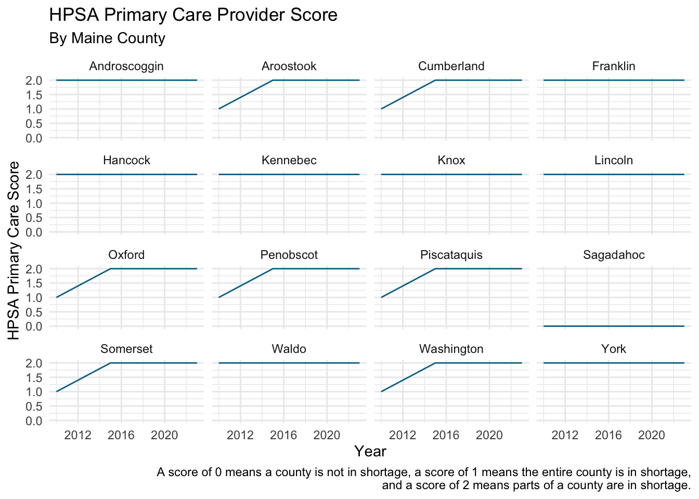
hpsa_dental %>%
ggplot(aes(x = hpsa_dental_data_year, y = hpsa_dental_score)) +
geom_line(color = "#007395") +
labs(title = "HPSA Dental Care Provider Score", subtitle = "By Maine County", x = "Year", y = "HPSA Dental Care Score", caption = "A score of 0 means a county is not in shortage, a score of 1 means the entire county is in shortage,\n and a score of 2 means parts of a county are in shortage.") +
theme_minimal() +
facet_wrap(~ county_name)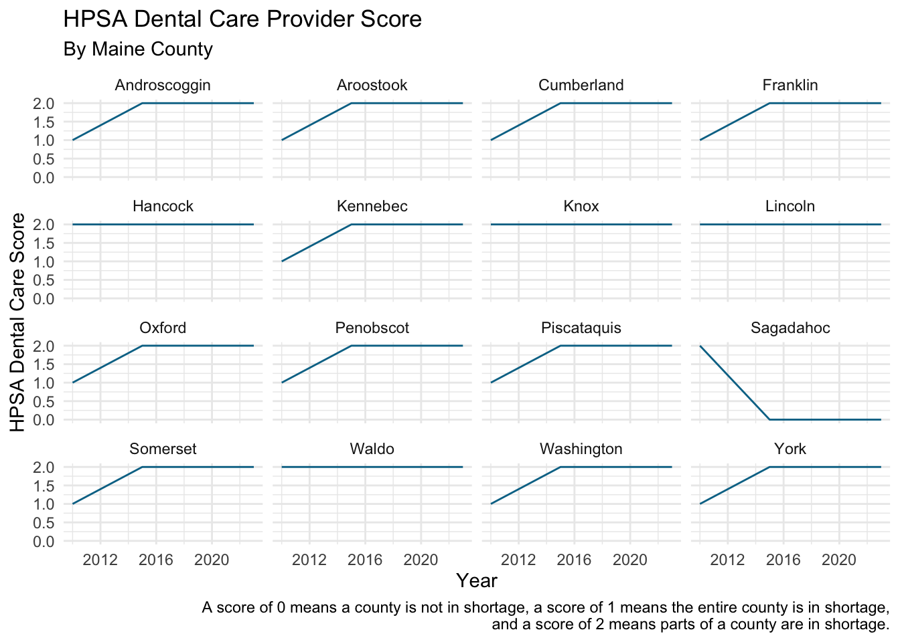
hpsa_mh %>%
ggplot(aes(x = hpsa_mh_data_year, y = hpsa_mh_score)) +
geom_line(color = "#007395") +
labs(title = "HPSA Mental Health Care Provider Score", subtitle = "By Maine County", x = "Year", y = "HPSA Mental Health Care Score", caption = "A score of 0 means a county is not in shortage, a score of 1 means the entire county is in shortage,\n and a score of 2 means parts of a county are in shortage.") +
theme_minimal() +
facet_wrap(~ county_name)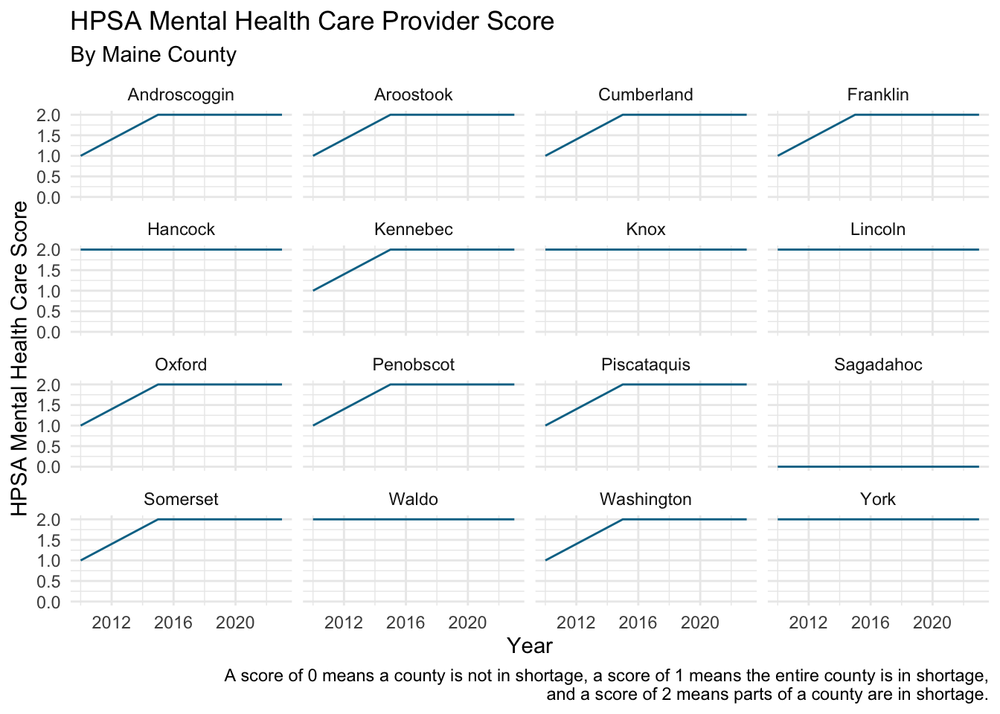
hpsa_pc_provider_counts %>%
ggplot() +
geom_col(aes(x = pc_physician_count_year, y = pc_physician_count, fill = "Primary Care Physician Count")) +
geom_col(aes(x = pc_physician_count_year, y = md_pc_count, fill = "Primary Care (MD) Count")) +
geom_col(aes(x = pc_physician_count_year, y = do_pc_count, fill = "Primary Care (DO) Count")) +
labs(title = "Primary Care Physician Count by Year", subtitle = "By Maine County", x = "Year", y = "Primary Care Physician Count", fill = "Provider Type") +
theme_minimal() +
facet_wrap(~ county_name) +
scale_fill_viridis_d(begin = 0.1, end = 0.8)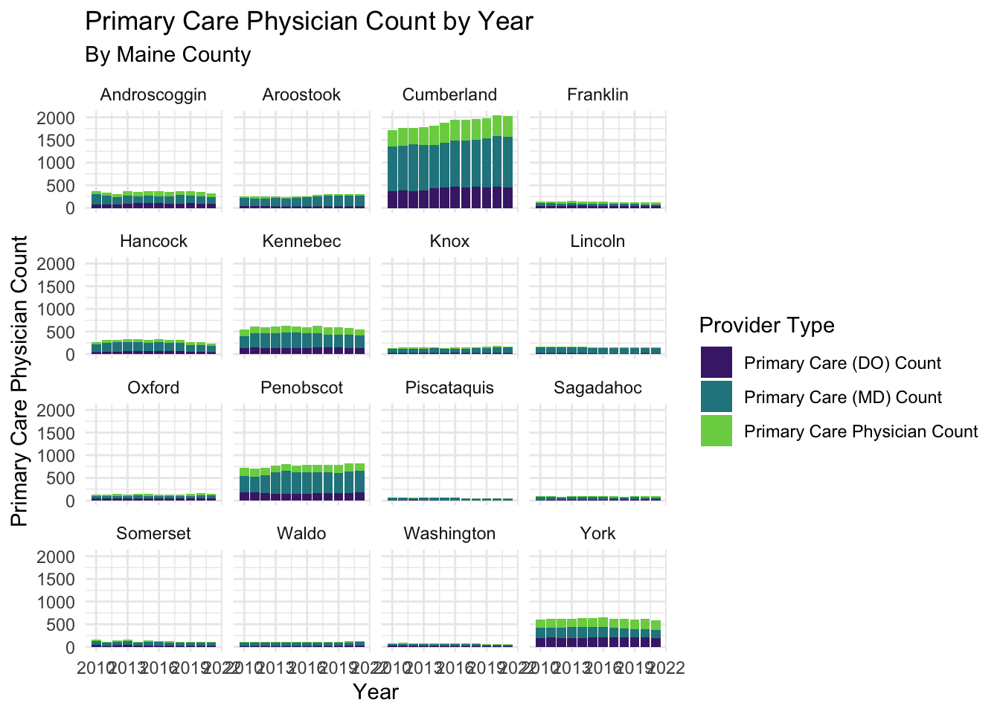
hpsa_pc_provider_counts %>%
filter(census_year == "2020") %>%
ggplot() +
geom_col(aes(x = pc_physician_count_year, y = pc_physician_count/census_count, fill = "Primary Care Physician Count")) +
geom_col(aes(x = pc_physician_count_year, y = md_pc_count/census_count, fill = "Primary Care (MD) Count")) +
geom_col(aes(x = pc_physician_count_year, y = do_pc_count/census_count, fill = "Primary Care (DO) Count")) +
scale_y_continuous(labels = label_comma()) +
labs(title = "Primary Care Physician Count by Year", subtitle = "By Maine County", x = "Year", y = "Primary Care Physician Count", fill = "Provider Type", caption = "Provider count is divided by county population as of the 2020 Census.") +
theme_minimal() +
facet_wrap(~ county_name) +
scale_fill_viridis_d(begin = 0.1, end = 0.8)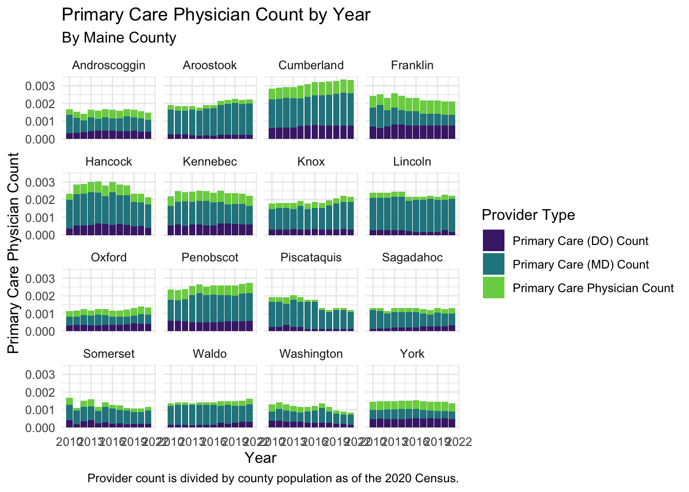
hpsa_pc_provider_counts %>%
ggplot() +
geom_line(aes(x = pc_physician_count_year, y = pc_physician_count, color = "Primary Care Physician Count")) +
geom_line(aes(x = pc_physician_count_year, y = md_pc_count, color = "Primary Care (MD) Count")) +
geom_line(aes(x = pc_physician_count_year, y = do_pc_count, color = "Primary Care (DO) Count")) +
labs(title = "Primary Care Physician Count by Year", subtitle = "By Maine County", x = "Year", y = "Primary Care Physician Count", fill = "Provider Type") +
theme_minimal() +
facet_wrap(~ county_name) +
scale_color_viridis_d(begin = 0.4, end = 0.8)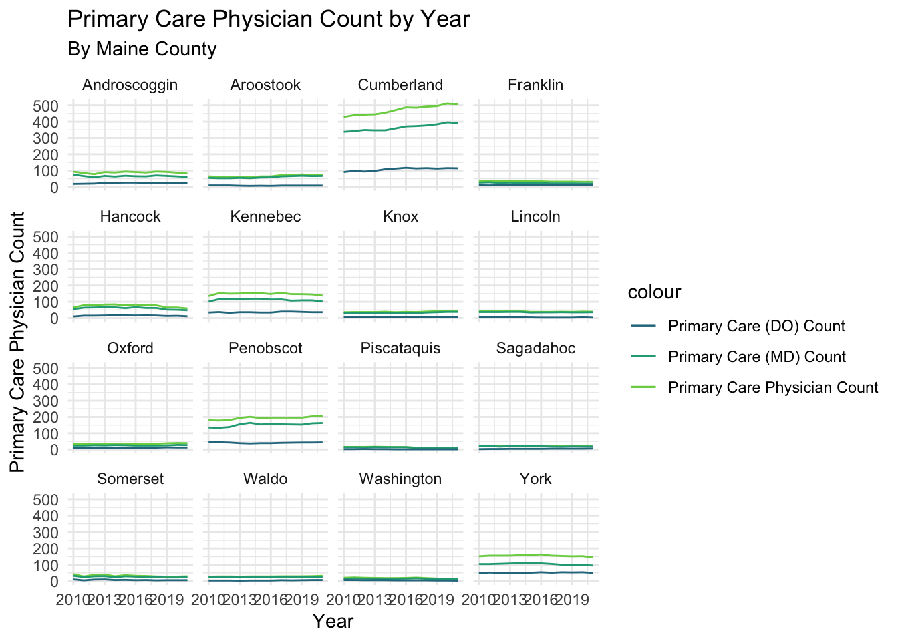
hpsa_pc_provider_counts %>%
filter(census_year == "2020") %>%
ggplot() +
geom_line(aes(x = pc_physician_count_year, y = pc_physician_count/census_count, color = "Primary Care Physician Count")) +
geom_line(aes(x = pc_physician_count_year, y = md_pc_count/census_count, color = "Primary Care (MD) Count")) +
geom_line(aes(x = pc_physician_count_year, y = do_pc_count/census_count, color = "Primary Care (DO) Count")) +
scale_y_continuous(labels = label_comma()) +
labs(title = "Primary Care Physician Count by Year", subtitle = "By Maine County", x = "Year", y = "Primary Care Physician Count", fill = "Provider Type", caption = "Provider count is divided by county population as of the 2020 Census.") +
theme_minimal() +
facet_wrap(~ county_name) +
scale_color_viridis_d(begin = 0.4, end = 0.8)
md %>%
ggplot(aes(x = md_data_year, y = active_md_count)) +
geom_col(fill = "#009796") +
labs(title = "Active MDs by Year", subtitle = "By Maine County", x = "Data Year", y = "Count") +
theme_minimal() +
facet_wrap(~ county_name)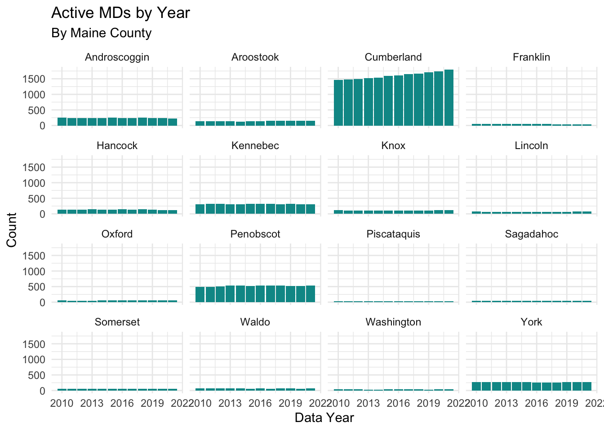
care_types %>%
filter(care_type %in% c("natal_postprtm_psych_svc", "psych_care", "psych_conslt_svc", "psych_conslttn_lisn_svc", "psych_eductnl_svc", "psych_gertrc_svc", "psych_intensv_outpt_svc", "psych_outpt_svc", "psych_ped_care_svc", "psych_php_adult", "psych_php_ped", "psych_rsdntl_tx_adult", "psych_rsdntl_tx_ped")) %>%
mutate(care_type = recode(care_type, natal_postprtm_psych_svc = "Natal & Postpartum Psychiatric Services", psych_care = "Psychiatric Care", psych_conslt_svc = "Psychiatric Consult Services", psych_conslttn_lisn_svc = "Psychiatric Consultation Liasion Services", psych_eductnl_svc = "Psyciatric Educational Services", psych_gertrc_svc = "Geriatric Psychiatric Services", psych_intensv_outpt_svc = "Intensive Outpatient Services", psych_ped_care_svc = "Pediatric Psychiatric Care", psych_php_adult = "Adult Partial Hospitalization Program", psych_php_ped = "Pediatric Partial Hospitalization Program", psych_rsdntl_tx_adult = "Adult Psychiatric Residential Treatment", psych_rsdntl_tx_ped = "Pediatric Psychiatric Residential Treatment", psych_outpt_svc = "Outpatient Psychiatric Services")) %>%
filter(count != "0") %>%
ggplot(aes(x = care_type, y = count, fill = care_type)) +
geom_col() +
coord_flip() +
labs(title = "Psychiatric Care Offered by County", x = "Type of Care", y = "Count", fill = "Care Type") +
theme_minimal() +
facet_wrap(~ cnty_name, scales = "free", ncol = 3) +
scale_fill_viridis_d()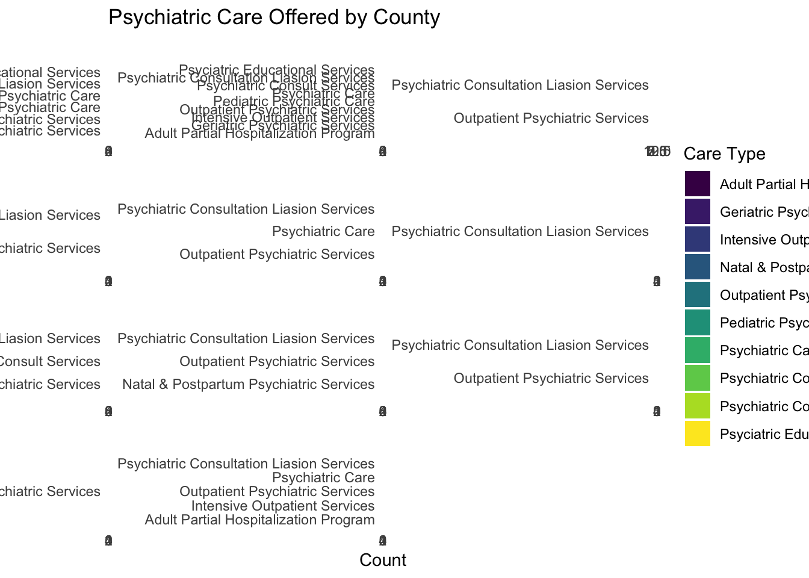
care_types %>%
filter(care_type %in% c("birth_postprtm_rm", "obstetrc_care")) %>%
mutate(care_type = recode(care_type, birth_postprtm_rm = "Birth & Postpartum", obstetrc_care = "OBGYN Services")) %>%
filter(count != "0") %>%
ggplot(aes(x = care_type, y = count, fill = cnty_name)) +
geom_col() +
coord_flip() +
theme_minimal() +
labs(title = "Birth, Postpartum, and OBGYN Services", subtitle = "By Maine County", x = "Care Type", y = "Count", fill = "County Name") +
facet_wrap(~ cnty_name) +
scale_fill_viridis_d()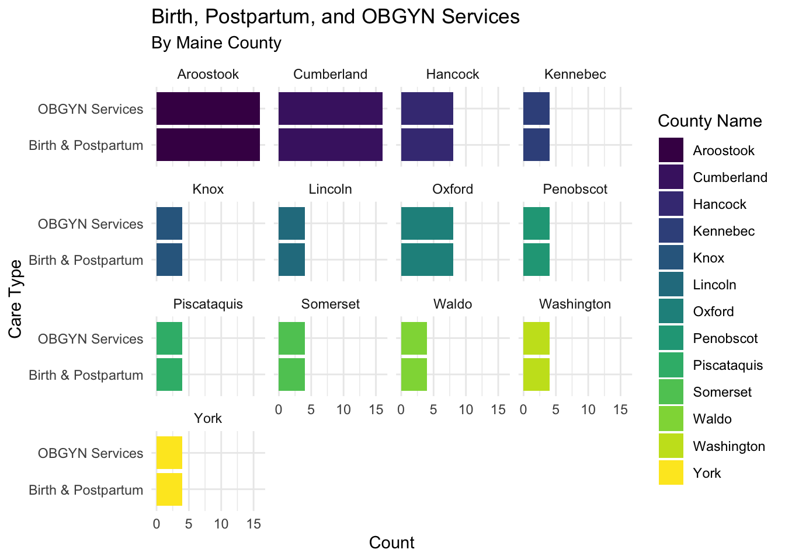
care_types %>%
filter(care_type %in% c("air_amb_svc", "amb_svc")) %>%
mutate(care_type = recode(care_type, air_amb_svc = "Air Ambulance Service", amb_svc = "Ambulance Service")) %>%
filter(count != "0") %>%
ggplot(aes(x = care_type, y = count, fill = cnty_name)) +
geom_col() +
coord_flip() +
theme_minimal() +
labs(title = "Ambulance Services", subtitle = "By Maine County", x = "Type", y = "Count", fill = "County Name") +
facet_wrap(~ cnty_name) +
scale_fill_viridis_d()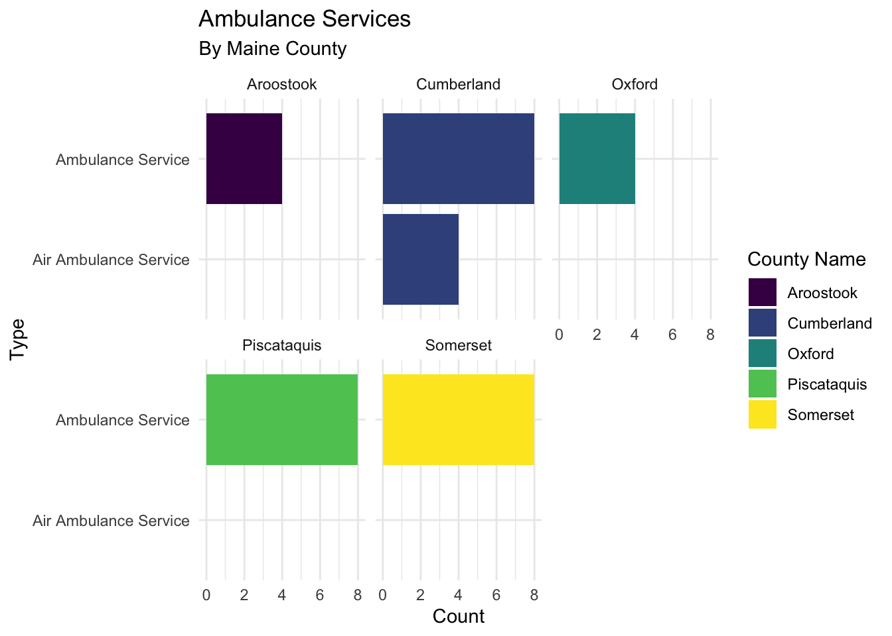
care_types %>%
filter(care_type %in% c("substnc_use_php", "substnc_use_ped_svc", "substnc_use_outpt_svc", "substnc_use_inpat_care")) %>%
mutate(care_type = recode(care_type, substnc_use_php = "Substance Use Partial Hospitalization Program", substnc_use_ped_svc = "Pediatric Substance Use Services", substnc_use_outpt_svc = "Outpatient Substance Use Services", substnc_use_inpat_care = "Inpatient Substance Use Care")) %>%
filter(count != "0") %>%
ggplot(aes(x = care_type, y = count, fill = cnty_name)) +
geom_col() +
coord_flip() +
theme_minimal() +
labs(title = "Substance Use Treatment", subtitle = "By Maine County", x = "Treatment Type", y = "Count", fill = "County Name")+
facet_wrap(~ cnty_name, scales = "free") +
scale_fill_viridis_d()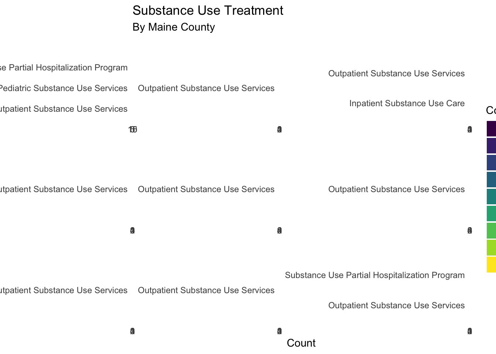
hosp_data %>%
select(county_name, hosp_count_year, hosp_count, stgh_count, lth_count, sth_psych_count, sth_child_med_count, sth_child_psych_count, lth_psych_count, lth_child_psych_count, sth_comn_count, vetn_hosp_count, stgh_critcl_access_count, sole_comn_provdrs_count) %>%
distinct(county_name, hosp_count_year, .keep_all = TRUE) %>%
rename("County Name" = "county_name", "Year" = "hosp_count_year", "Hospitals" = "hosp_count", "Short Term General Hospitals" = "stgh_count", "Long Term Hospitals" = "lth_count", "Short Term Psychiatric Hospitals" = "sth_psych_count", "Short Term Pediatric Hospitals" = "sth_child_med_count", "Short Term Child Psychiatric Hospitals" = "sth_child_psych_count", "Long Term Psychiatric Hospitals" = "lth_psych_count", "Long Term Pediatric Psychiatric Hospitals" = "lth_child_psych_count", "Short Term Community Hospitals" = "sth_comn_count", "Veterans Hospitals" = "vetn_hosp_count", "Short Term General Critical Access Hospitals" = "stgh_critcl_access_count", "Sole Community Providers" = "sole_comn_provdrs_count") County Name Year Hospitals Short Term General Hospitals Long Term Hospitals
1 Androscoggin 2021 2 2 0
2 Androscoggin 2020 2 2 0
3 Aroostook 2021 4 4 0
4 Aroostook 2020 4 4 0
5 Cumberland 2021 6 4 0
6 Cumberland 2020 6 4 0
7 Franklin 2021 1 1 0
8 Franklin 2020 1 1 0
9 Hancock 2021 3 3 0
10 Hancock 2020 3 3 0
11 Kennebec 2021 4 3 1
12 Kennebec 2020 4 3 1
13 Knox 2021 1 1 0
14 Knox 2020 1 1 0
15 Lincoln 2021 1 1 0
16 Lincoln 2020 1 1 0
17 Oxford 2021 2 2 0
18 Oxford 2020 2 2 0
19 Penobscot 2021 6 4 1
20 Penobscot 2020 6 4 1
21 Piscataquis 2021 2 2 0
22 Piscataquis 2020 2 2 0
23 Sagadahoc 2021 0 0 0
24 Sagadahoc 2020 0 0 0
25 Somerset 2021 2 2 0
26 Somerset 2020 2 2 0
27 Waldo 2021 1 1 0
28 Waldo 2020 1 1 0
29 Washington 2021 2 2 0
30 Washington 2020 2 2 0
31 York 2021 2 2 0
32 York 2020 2 2 0
Short Term Psychiatric Hospitals Short Term Pediatric Hospitals
1 0 0
2 0 0
3 0 0
4 0 0
5 1 0
6 1 0
7 0 0
8 0 0
9 0 0
10 0 0
11 0 0
12 0 0
13 0 0
14 0 0
15 0 0
16 0 0
17 0 0
18 0 0
19 1 0
20 1 0
21 0 0
22 0 0
23 0 0
24 0 0
25 0 0
26 0 0
27 0 0
28 0 0
29 0 0
30 0 0
31 0 0
32 0 0
Short Term Child Psychiatric Hospitals Long Term Psychiatric Hospitals
1 0 0
2 0 0
3 0 0
4 0 0
5 0 0
6 0 0
7 0 0
8 0 0
9 0 0
10 0 0
11 0 1
12 0 1
13 0 0
14 0 0
15 0 0
16 0 0
17 0 0
18 0 0
19 0 1
20 0 1
21 0 0
22 0 0
23 0 0
24 0 0
25 0 0
26 0 0
27 0 0
28 0 0
29 0 0
30 0 0
31 0 0
32 0 0
Long Term Pediatric Psychiatric Hospitals Short Term Community Hospitals
1 0 2
2 0 2
3 0 4
4 0 4
5 0 5
6 0 5
7 0 1
8 0 1
9 0 3
10 0 3
11 0 2
12 0 2
13 0 1
14 0 1
15 0 1
16 0 1
17 0 2
18 0 2
19 0 4
20 0 4
21 0 2
22 0 2
23 0 0
24 0 0
25 0 2
26 0 2
27 0 1
28 0 1
29 0 2
30 0 2
31 0 2
32 0 2
Veterans Hospitals Short Term General Critical Access Hospitals
1 0 0
2 0 0
3 0 1
4 0 1
5 0 1
6 0 1
7 0 0
8 0 0
9 0 2
10 0 2
11 1 0
12 1 0
13 0 0
14 0 0
15 0 1
16 0 1
17 0 2
18 0 2
19 0 2
20 0 2
21 0 2
22 0 2
23 0 0
24 0 0
25 0 2
26 0 2
27 0 1
28 0 1
29 0 2
30 0 2
31 0 0
32 0 0
Sole Community Providers
1 0
2 0
3 1
4 1
5 0
6 0
7 1
8 1
9 1
10 1
11 0
12 0
13 1
14 1
15 0
16 0
17 0
18 0
19 0
20 0
21 0
22 0
23 0
24 0
25 0
26 0
27 0
28 0
29 0
30 0
31 0
32 0hosp_adm_data %>%
select(county_name, hosp_adm_count_year, hosp_adm_count, stgh_hosp_count, stnglth_hosp_count, sth_comn_hosp_count) %>%
distinct(county_name, hosp_adm_count_year, .keep_all = TRUE) %>%
rename("County Name" = "county_name", "Year" = "hosp_adm_count_year", "Hospital Admissions" = "hosp_adm_count", "Short Term General Hospital Admissions" = "stgh_hosp_count", "Short Term Non-general and Long Term Hospital Admissions" = "stnglth_hosp_count", "Short Term Community Hospital Admissions" = "sth_comn_hosp_count") County Name Year Hospital Admissions Short Term General Hospital Admissions
1 Androscoggin 2021 13727 13727
2 Androscoggin 2020 14158 14158
3 Aroostook 2021 5013 5013
4 Aroostook 2020 5411 5411
5 Cumberland 2021 39049 35656
6 Cumberland 2020 40838 37046
7 Franklin 2021 1422 1422
8 Franklin 2020 1475 1475
9 Hancock 2021 2867 2867
10 Hancock 2020 3058 3058
11 Kennebec 2021 11841 11732
12 Kennebec 2020 13026 12695
13 Knox 2021 2597 2597
14 Knox 2020 2686 2686
15 Lincoln 2021 1304 1304
16 Lincoln 2020 1402 1402
17 Oxford 2021 1824 1824
18 Oxford 2020 1880 1880
19 Penobscot 2021 24491 22733
20 Penobscot 2020 25221 23538
21 Piscataquis 2021 1148 1148
22 Piscataquis 2020 1313 1313
23 Sagadahoc 2021 0 0
24 Sagadahoc 2020 0 0
25 Somerset 2021 2108 2108
26 Somerset 2020 2044 2044
27 Waldo 2021 1122 1122
28 Waldo 2020 1106 1106
29 Washington 2021 1115 1115
30 Washington 2020 1214 1214
31 York 2021 9269 9269
32 York 2020 9293 9293
Short Term Non-general and Long Term Hospital Admissions
1 0
2 0
3 0
4 0
5 3393
6 3792
7 0
8 0
9 0
10 0
11 109
12 331
13 0
14 0
15 0
16 0
17 0
18 0
19 1758
20 1683
21 0
22 0
23 0
24 0
25 0
26 0
27 0
28 0
29 0
30 0
31 0
32 0
Short Term Community Hospital Admissions
1 13727
2 14158
3 5013
4 5411
5 37449
6 38779
7 1422
8 1475
9 2867
10 3058
11 9504
12 9880
13 2597
14 2686
15 1304
16 1402
17 1824
18 1880
19 22733
20 23538
21 1148
22 1313
23 0
24 0
25 2108
26 2044
27 1122
28 1106
29 1115
30 1214
31 9269
32 9293dental_care %>%
select(cnty_name, dent_data_year, active_dentist_count) %>%
distinct(cnty_name, dent_data_year, .keep_all = TRUE) %>%
rename("County Name" = "cnty_name", "Year" = "dent_data_year", "Active Dentists" = "active_dentist_count") County Name Year Active Dentists
1 Androscoggin 2022 49
2 Androscoggin 2021 49
3 Aroostook 2022 25
4 Aroostook 2021 25
5 Cumberland 2022 277
6 Cumberland 2021 277
7 Franklin 2022 10
8 Franklin 2021 10
9 Hancock 2022 21
10 Hancock 2021 21
11 Kennebec 2022 82
12 Kennebec 2021 82
13 Knox 2022 30
14 Knox 2021 30
15 Lincoln 2022 9
16 Lincoln 2021 9
17 Oxford 2022 19
18 Oxford 2021 19
19 Penobscot 2022 88
20 Penobscot 2021 88
21 Piscataquis 2022 5
22 Piscataquis 2021 5
23 Sagadahoc 2022 18
24 Sagadahoc 2021 18
25 Somerset 2022 10
26 Somerset 2021 10
27 Waldo 2022 7
28 Waldo 2021 7
29 Washington 2022 11
30 Washington 2021 11
31 York 2022 94
32 York 2021 94facility_types %>%
select(cnty_name, facility_type_data_year, rural_health_clinic_count, community_mh_center_count, fqhc_count) %>%
distinct(cnty_name, facility_type_data_year, .keep_all = TRUE) %>%
rename("County Name" = "cnty_name", "Year" = "facility_type_data_year", "Rural Health Clinics" = "rural_health_clinic_count", "Community Mental Health Centers" = "community_mh_center_count", "Federally Qualified Health Centers" = "fqhc_count") County Name Year Rural Health Clinics Community Mental Health Centers
1 Androscoggin 2022 1 0
2 Androscoggin 2021 1 0
3 Aroostook 2022 6 0
4 Aroostook 2021 6 0
5 Cumberland 2022 0 0
6 Cumberland 2021 0 0
7 Franklin 2022 2 0
8 Franklin 2021 2 0
9 Hancock 2022 0 0
10 Hancock 2021 0 0
11 Kennebec 2022 0 0
12 Kennebec 2021 0 0
13 Knox 2022 0 0
14 Knox 2021 0 0
15 Lincoln 2022 3 0
16 Lincoln 2021 3 0
17 Oxford 2022 5 0
18 Oxford 2021 5 0
19 Penobscot 2022 7 0
20 Penobscot 2021 7 0
21 Piscataquis 2022 3 0
22 Piscataquis 2021 3 0
23 Sagadahoc 2022 0 0
24 Sagadahoc 2021 0 0
25 Somerset 2022 2 0
26 Somerset 2021 2 0
27 Waldo 2022 5 0
28 Waldo 2021 5 0
29 Washington 2022 3 0
30 Washington 2021 3 0
31 York 2022 0 0
32 York 2021 0 0
Federally Qualified Health Centers
1 19
2 19
3 21
4 21
5 16
6 16
7 3
8 3
9 2
10 2
11 4
12 4
13 1
14 1
15 1
16 1
17 1
18 1
19 32
20 32
21 3
22 3
23 1
24 1
25 6
26 6
27 2
28 2
29 14
30 14
31 4
32 4md %>%
ggplot(aes(x = md_data_year, y = active_md_count)) +
geom_line(color = "#009796") +
theme_minimal() +
labs(title = "Active MD Count by Year", subtitle = "By Maine County", x = "Year", y = "Count") +
facet_wrap(~ county_name)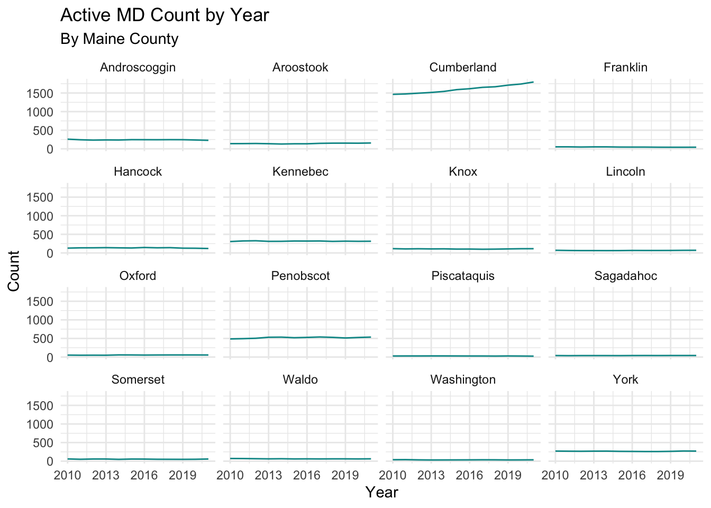
md %>%
ggplot(aes(x = md_data_year, y = all_md_patient_care_count)) +
geom_line(color = "#009796") +
theme_minimal() +
labs(title = "Active MDs in Patient Care by Year", subtitle = "By Maine County", x = "Year", y = "Count") +
facet_wrap(~ county_name)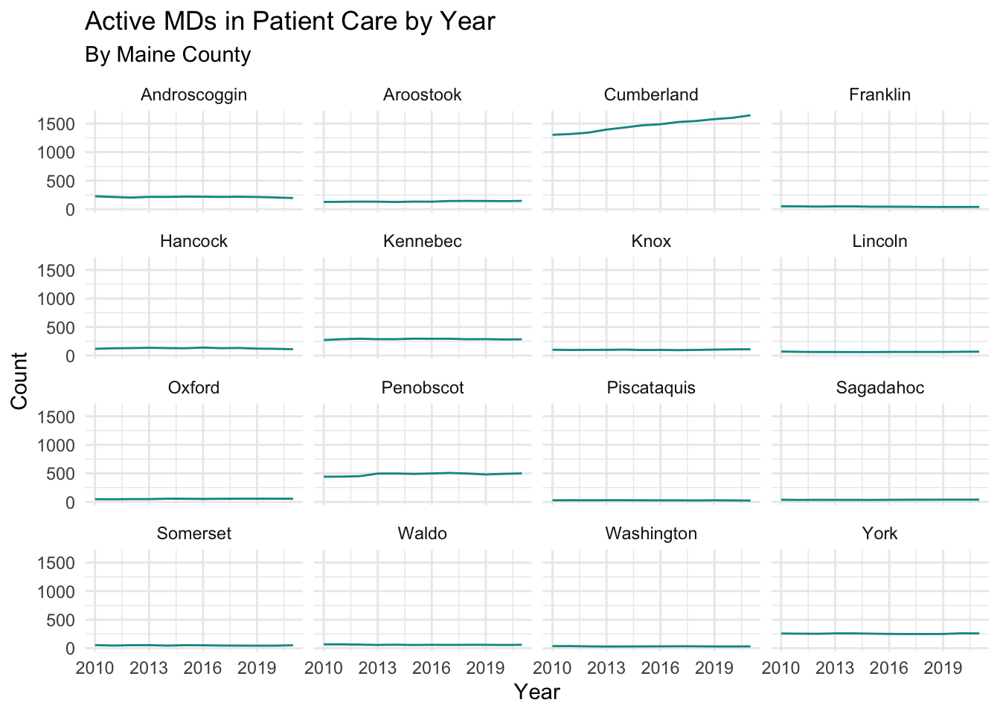
nurses %>%
select(cnty_name, np_year, np_count, clin_nurse_count, crna_count, apn_midwives_count) %>%
distinct(cnty_name, np_year, .keep_all = TRUE) %>%
rename("County Name" = "cnty_name", "Year" = "np_year", "Nurse Practitioners" = "np_count", "Clinical Nurses" = "clin_nurse_count", "Certified Registered Nurse Anesthetists" = "crna_count", "Advance Practice Nurse Midwives" = "apn_midwives_count") County Name Year Nurse Practitioners Clinical Nurses
1 Androscoggin 2022 203 4
2 Androscoggin 2021 202 4
3 Aroostook 2022 101 0
4 Aroostook 2021 98 0
5 Cumberland 2022 626 20
6 Cumberland 2021 573 20
7 Franklin 2022 28 0
8 Franklin 2021 25 0
9 Hancock 2022 48 3
10 Hancock 2021 48 3
11 Kennebec 2022 222 3
12 Kennebec 2021 200 3
13 Knox 2022 43 2
14 Knox 2021 38 2
15 Lincoln 2022 34 2
16 Lincoln 2021 30 2
17 Oxford 2022 39 1
18 Oxford 2021 39 1
19 Penobscot 2022 363 8
20 Penobscot 2021 343 8
21 Piscataquis 2022 13 0
22 Piscataquis 2021 11 0
23 Sagadahoc 2022 21 0
24 Sagadahoc 2021 20 0
25 Somerset 2022 27 1
26 Somerset 2021 25 1
27 Waldo 2022 38 0
28 Waldo 2021 33 0
29 Washington 2022 36 2
30 Washington 2021 34 2
31 York 2022 179 7
32 York 2021 155 7
Certified Registered Nurse Anesthetists Advance Practice Nurse Midwives
1 63 9
2 63 9
3 13 4
4 13 4
5 150 18
6 150 18
7 0 1
8 0 1
9 11 8
10 11 8
11 30 9
12 30 9
13 2 9
14 2 9
15 11 4
16 11 4
17 5 0
18 5 0
19 78 12
20 78 12
21 4 0
22 4 0
23 0 2
24 0 2
25 1 0
26 1 0
27 0 1
28 0 1
29 8 1
30 8 1
31 16 5
32 16 5all_physicians %>%
filter(md_allergy_count != "0") %>%
ggplot(aes(x = county_name, y = md_allergy_count)) +
geom_col(fill = "#009796", position = "dodge") +
coord_flip() +
theme_minimal() +
labs(title = "Allergist (MD) Counts", subtitle = "By Maine County", x = "County", y = "Count") +
facet_wrap(~ physician_count_year, scales = "free")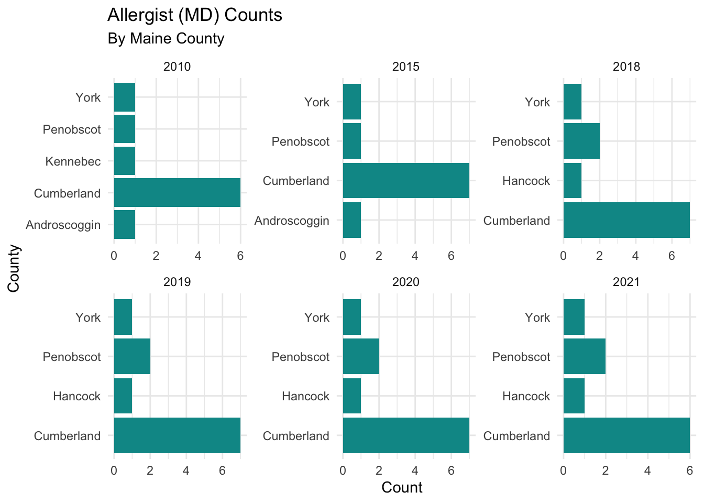
all_physicians %>%
filter(census_year == "2020") %>%
ggplot(aes(x = physician_count_year, y = md_allergy_count/census_count)) +
geom_smooth(method = "lm", color = "#AADB41") +
geom_line(alpha = 0.8, color = "#006992") +
theme_minimal() +
scale_y_continuous(labels = label_comma()) +
labs(title = "Allergist (MD) Counts", subtitle = "By Maine County", x = "Year", y = "Count", caption = "Allergist count was divided by county population as of the 2020 Census") +
facet_wrap(~ county_name)`geom_smooth()` using formula = 'y ~ x'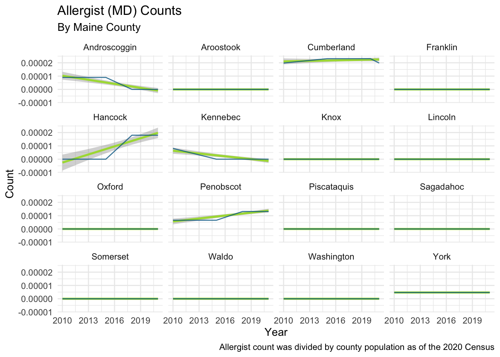
all_physicians %>%
filter(md_anesth_count != "0") %>%
ggplot(aes(x = county_name, y = md_anesth_count)) +
geom_col(fill = "#009796", position = "dodge") +
coord_flip() +
theme_minimal() +
labs(title = "Anesthesiologist (MD) Counts", subtitle = "By Maine County", x = "County", y = "Count") +
facet_wrap(~ physician_count_year, scales = "free")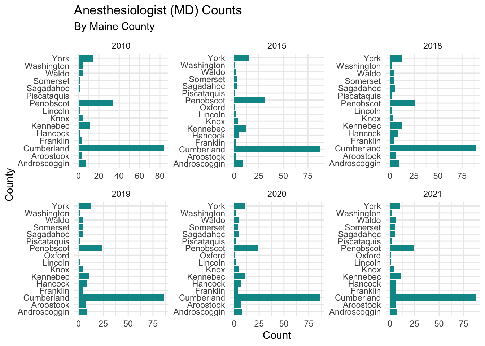
all_physicians %>%
filter(census_year == "2020") %>%
ggplot(aes(x = physician_count_year, y = md_anesth_count/census_count)) +
geom_smooth(method = "lm", color = "#AADB41") +
geom_line(alpha = 0.8, color = "#006992") +
theme_minimal() +
scale_y_continuous(labels = label_comma()) +
labs(title = "Anesthesiologist (MD) Counts", subtitle = "By Maine County", x = "Year", y = "Count", caption = "Anesthesiologist count was divided by county population as of the 2020 Census") +
facet_wrap(~ county_name)`geom_smooth()` using formula = 'y ~ x'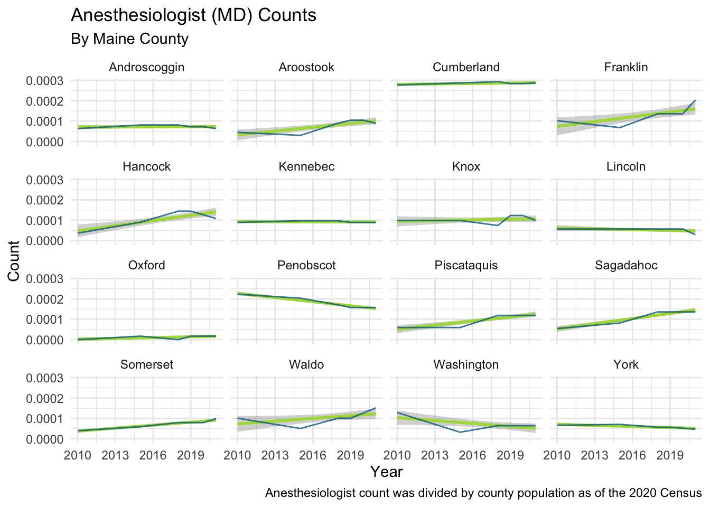
all_physicians %>%
filter(md_card_count != "0") %>%
ggplot(aes(x = county_name, y = md_card_count)) +
geom_col(fill = "#009796", position = "dodge") +
coord_flip() +
theme_minimal() +
labs(title = "Cardiologist (MD) Counts", subtitle = "By Maine County", x = "County", y = "Count") +
facet_wrap(~ physician_count_year, scales = "free")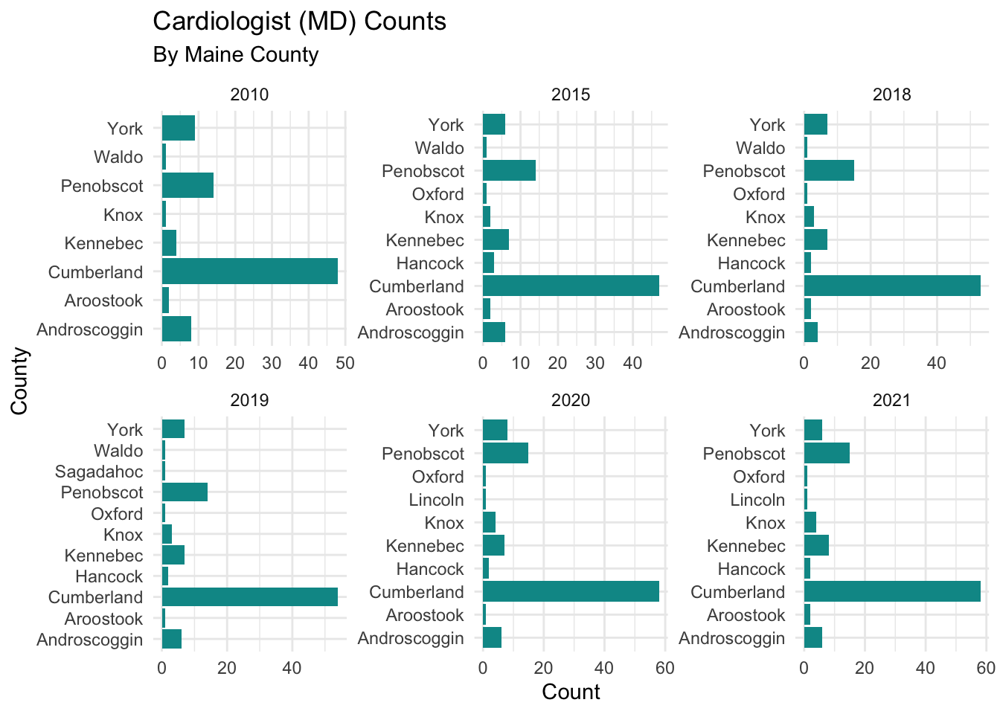
all_physicians %>%
filter(census_year == "2020") %>%
ggplot(aes(x = physician_count_year, y = md_card_count/census_count)) +
geom_smooth(method = "lm", color = "#AADB41") +
geom_line(alpha = 0.8, color = "#006992") +
theme_minimal() +
scale_y_continuous(labels = label_comma()) +
labs(title = "Cardiologist (MD) Counts", subtitle = "By Maine County", x = "Year", y = "Count", caption = "Cardiologist count was divided by county population as of the 2020 Census") +
facet_wrap(~ county_name)`geom_smooth()` using formula = 'y ~ x'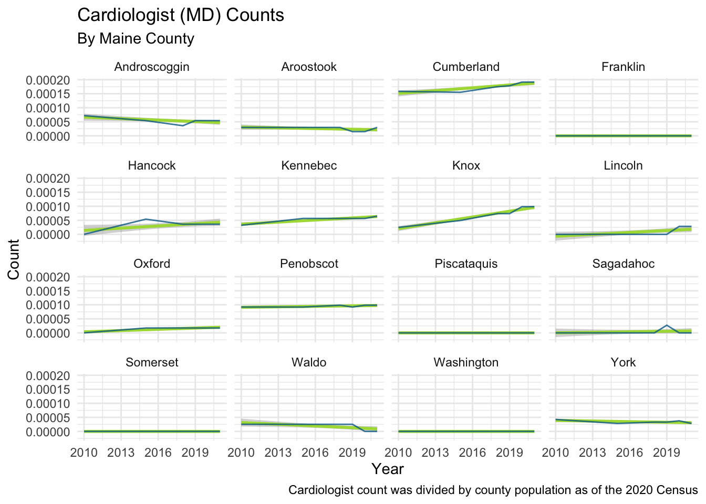
all_physicians %>%
filter(md_derm_count != "0") %>%
ggplot(aes(x = county_name, y = md_derm_count)) +
geom_col(fill = "#009796", position = "dodge") +
coord_flip() +
theme_minimal() +
labs(title = "Dermatologist (MD) Counts", subtitle = "By Maine County", x = "County", y = "Count") +
facet_wrap(~ physician_count_year, scales = "free")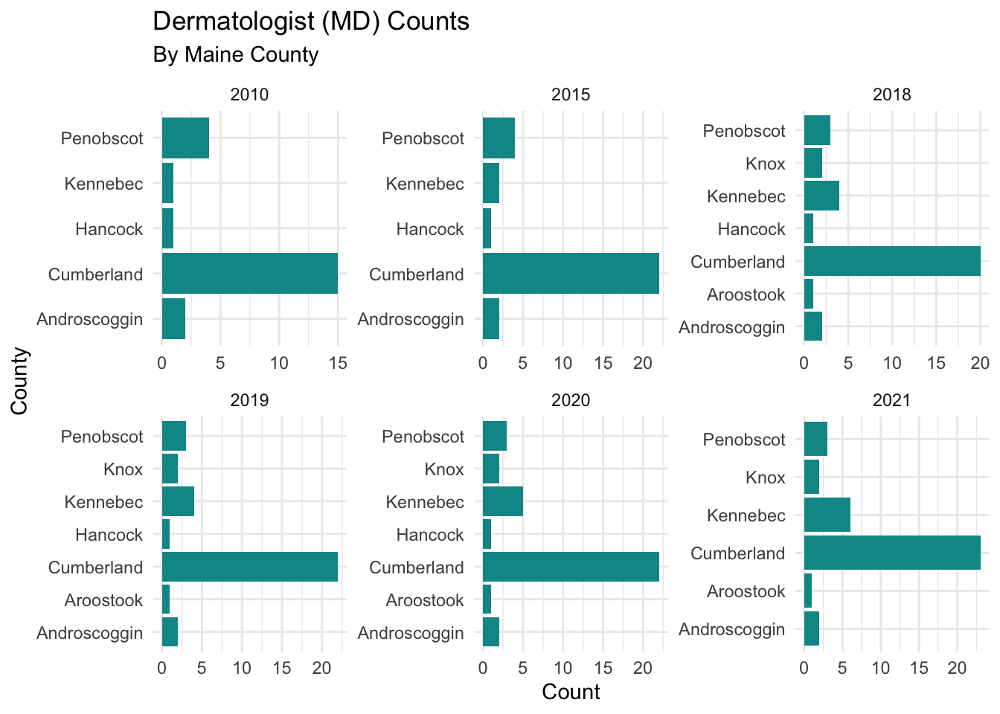
all_physicians %>%
filter(census_year == "2020") %>%
ggplot(aes(x = physician_count_year, y = md_derm_count/census_count)) +
geom_smooth(method = "lm", color = "#AADB41") +
geom_line(alpha = 0.8, color = "#006992") +
theme_minimal() +
scale_y_continuous(labels = label_comma()) +
labs(title = "Dermatologist (MD) Counts", subtitle = "By Maine County", x = "Year", y = "Count", caption = "Dermatologist count was divided by county population as of the 2020 Census") +
facet_wrap(~ county_name)`geom_smooth()` using formula = 'y ~ x'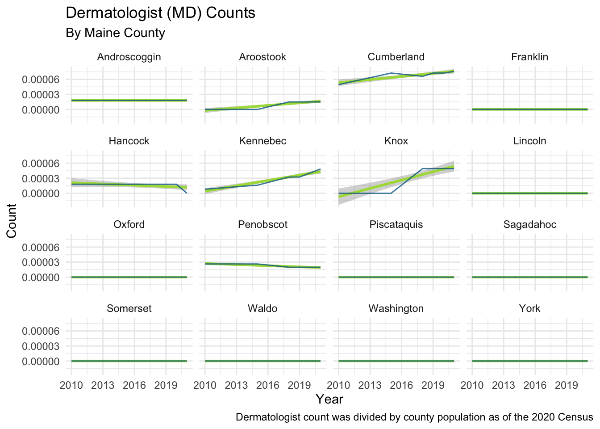
all_physicians %>%
filter(md_emerg_med_count != "0") %>%
ggplot(aes(x = county_name, y = md_emerg_med_count)) +
geom_col(fill = "#009796", position = "dodge") +
coord_flip() +
theme_minimal() +
labs(title = "Emergency Medicine Doctor (MD) Counts", subtitle = "By Maine County", x = "County", y = "Count") +
facet_wrap(~ physician_count_year, scales = "free")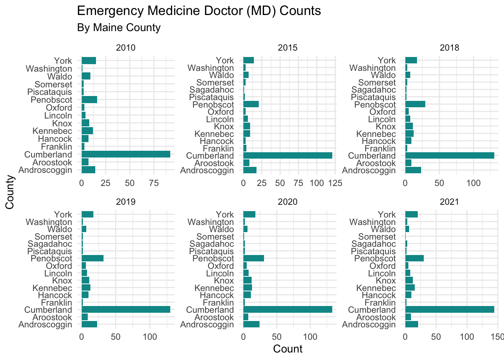
all_physicians %>%
filter(census_year == "2020") %>%
ggplot(aes(x = physician_count_year, y = md_emerg_med_count/census_count)) +
geom_smooth(method = "lm", color = "#AADB41") +
geom_line(alpha = 0.8, color = "#006992") +
theme_minimal() +
scale_y_continuous(labels = label_comma()) +
labs(title = "Emergency Medicine Doctor (MD) Counts", subtitle = "By Maine County", x = "Year", y = "Count", caption = "Emergency Medicine Doctor count was divided by county population as of the 2020 Census") +
facet_wrap(~ county_name)`geom_smooth()` using formula = 'y ~ x'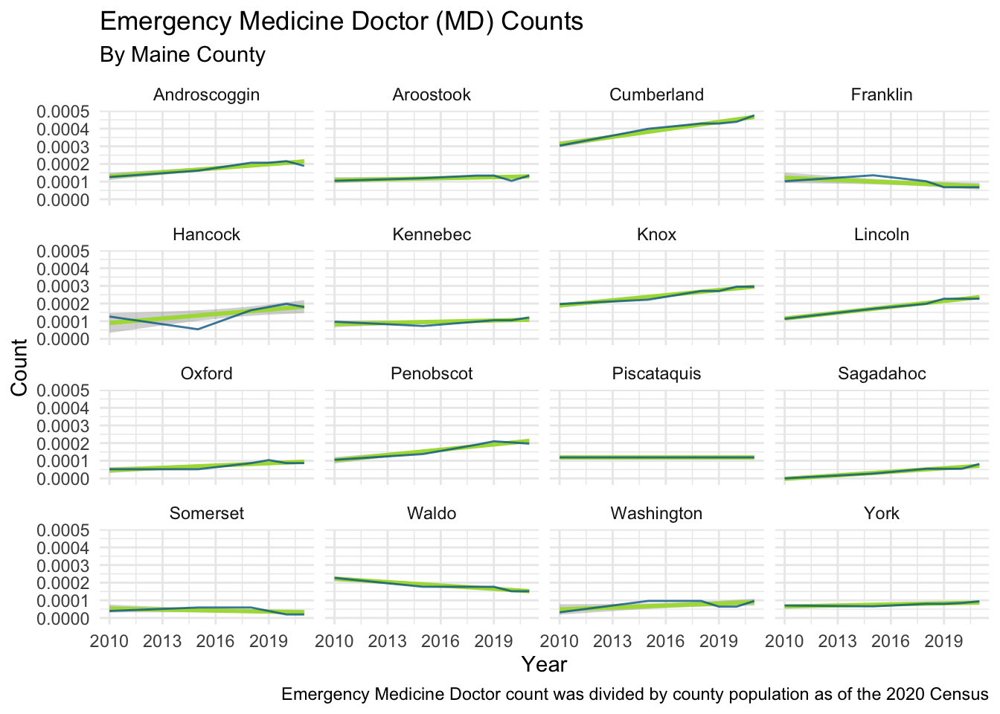
all_physicians %>%
filter(md_fammed_count != "0") %>%
ggplot(aes(x = county_name, y = md_fammed_count)) +
geom_col(fill = "#009796", position = "dodge") +
coord_flip() +
theme_minimal() +
labs(title = "Family Medicine Doctor (MD) Counts", subtitle = "By Maine County", x = "County", y = "Count") +
facet_wrap(~ physician_count_year, scales = "free")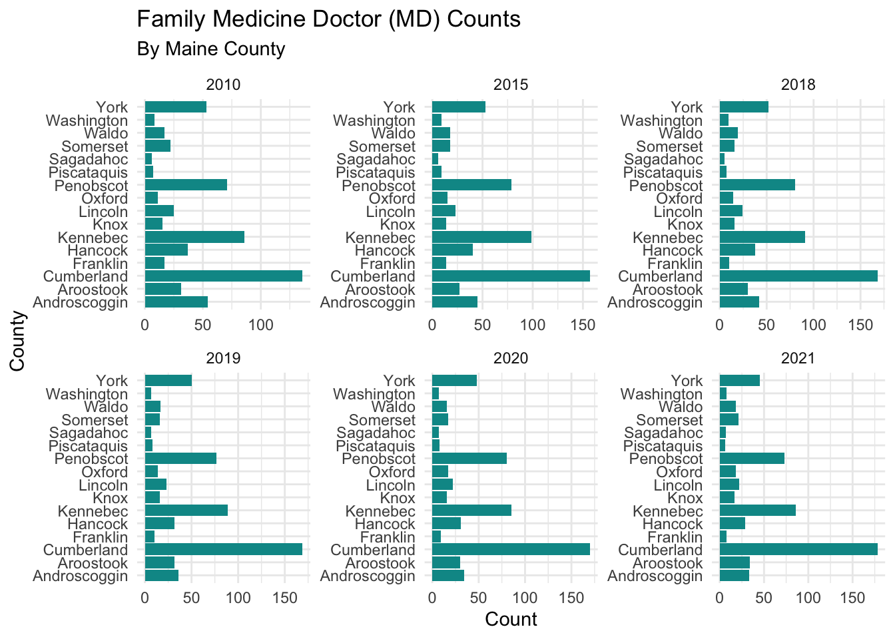
all_physicians %>%
filter(census_year == "2020") %>%
ggplot(aes(x = physician_count_year, y = md_fammed_count/census_count)) +
geom_smooth(method = "lm", color = "#AADB41") +
geom_line(alpha = 0.8, color = "#006992") +
theme_minimal() +
scale_y_continuous(labels = label_comma()) +
labs(title = "Family Medicine Doctor (MD) Counts", subtitle = "By Maine County", x = "Year", y = "Count", caption = "Family Medicine Doctor count was divided by county population as of the 2020 Census") +
facet_wrap(~ county_name)`geom_smooth()` using formula = 'y ~ x'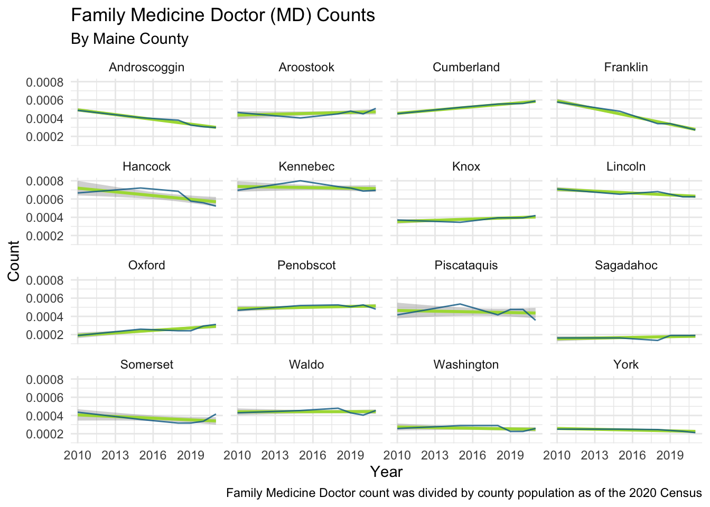
all_physicians %>%
filter(md_gastr_count != "0") %>%
ggplot(aes(x = county_name, y = md_gastr_count)) +
geom_col(fill = "#009796", position = "dodge") +
coord_flip() +
theme_minimal() +
labs(title = "Gastroenterologist (MD) Counts", subtitle = "By Maine County", x = "County", y = "Count") +
facet_wrap(~ physician_count_year, scales = "free")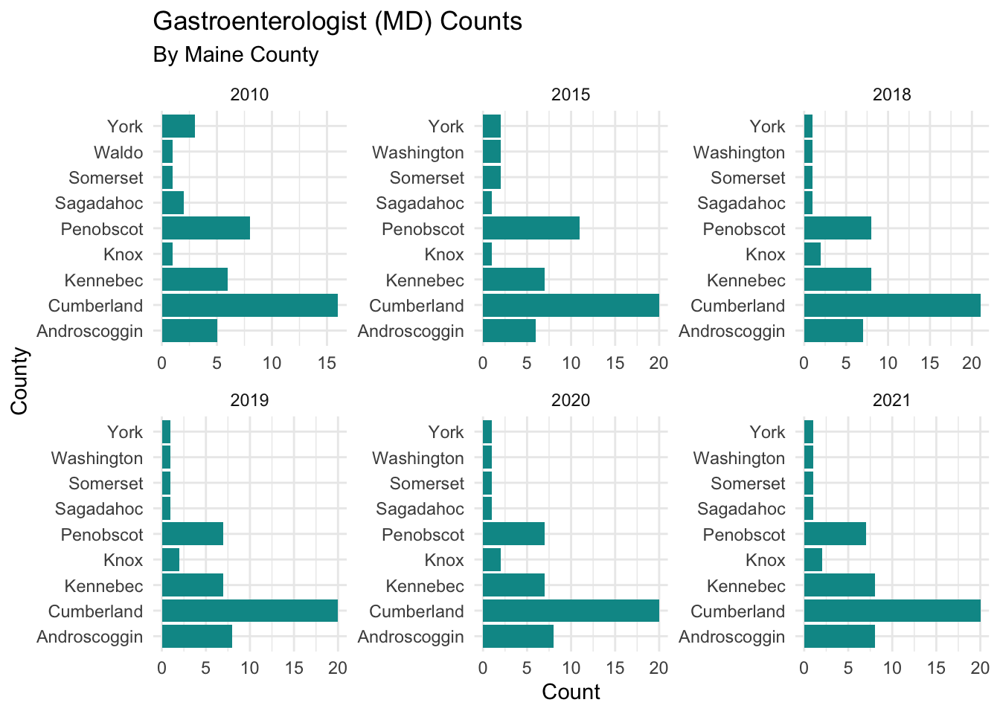
all_physicians %>%
filter(census_year == "2020") %>%
ggplot(aes(x = physician_count_year, y = md_gastr_count/census_count)) +
geom_smooth(method = "lm", color = "#AADB41") +
geom_line(alpha = 0.8, color = "#006992") +
theme_minimal() +
scale_y_continuous(labels = label_comma()) +
labs(title = "Gastroenterologist (MD) Counts", subtitle = "By Maine County", x = "Year", y = "Count", caption = "Gastroenterologist count was divided by county population as of the 2020 Census") +
facet_wrap(~ county_name)`geom_smooth()` using formula = 'y ~ x'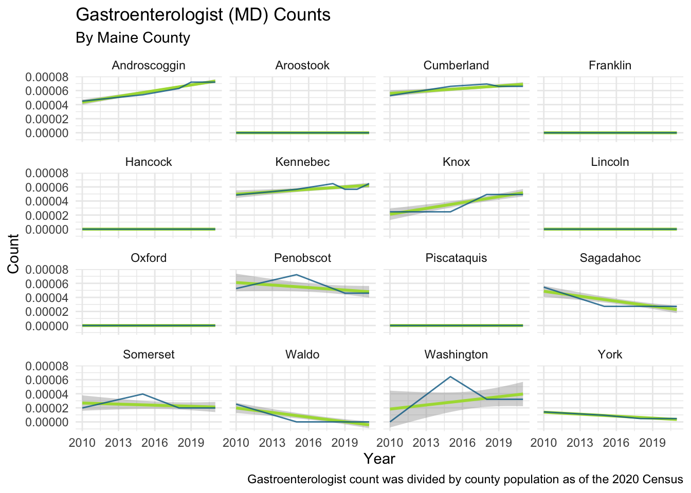
all_physicians %>%
filter(md_genintmed_count != "0") %>%
ggplot(aes(x = county_name, y = md_genintmed_count)) +
geom_col(fill = "#009796", position = "dodge") +
coord_flip() +
theme_minimal() +
labs(title = "General Internal Medicine Doctor (MD) Counts", subtitle = "By Maine County", x = "County", y = "Count") +
facet_wrap(~ physician_count_year, scales = "free")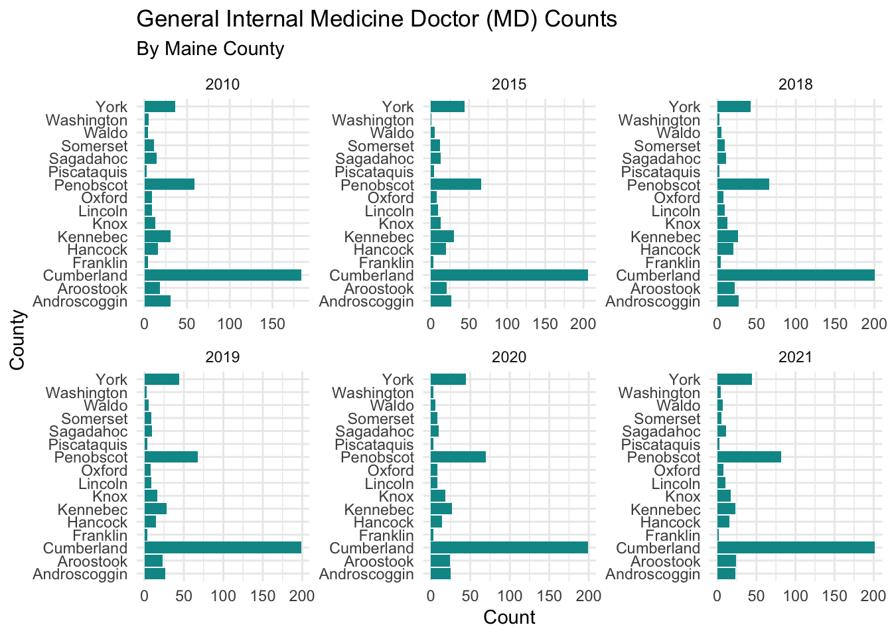
all_physicians %>%
filter(census_year == "2020") %>%
ggplot(aes(x = physician_count_year, y = md_genintmed_count/census_count)) +
geom_smooth(method = "lm", color = "#AADB41") +
geom_line(alpha = 0.8, color = "#006992") +
theme_minimal() +
scale_y_continuous(labels = label_comma()) +
labs(title = "General Internal Medicine Doctor (MD) Counts", subtitle = "By Maine County", x = "Year", y = "Count", caption = "General Internal Medicine Doctor count was divided by county population as of the 2020 Census") +
facet_wrap(~ county_name)`geom_smooth()` using formula = 'y ~ x'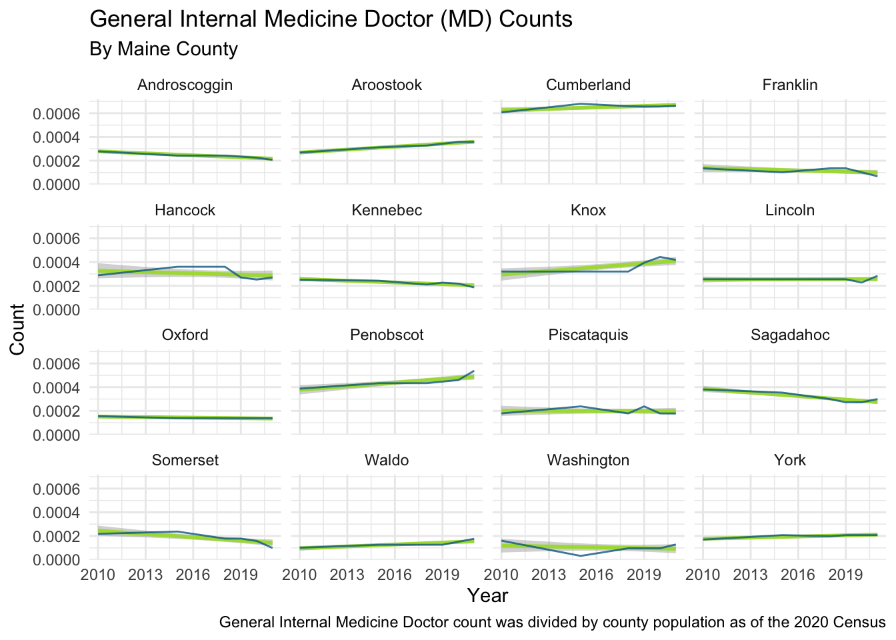
all_physicians %>%
filter(md_gen_surg_count != "0") %>%
ggplot(aes(x = county_name, y = md_gen_surg_count)) +
geom_col(fill = "#009796", position = "dodge") +
coord_flip() +
theme_minimal() +
labs(title = "General Surgeon (MD) Counts", subtitle = "By Maine County", x = "County", y = "Count") +
facet_wrap(~ physician_count_year, scales = "free")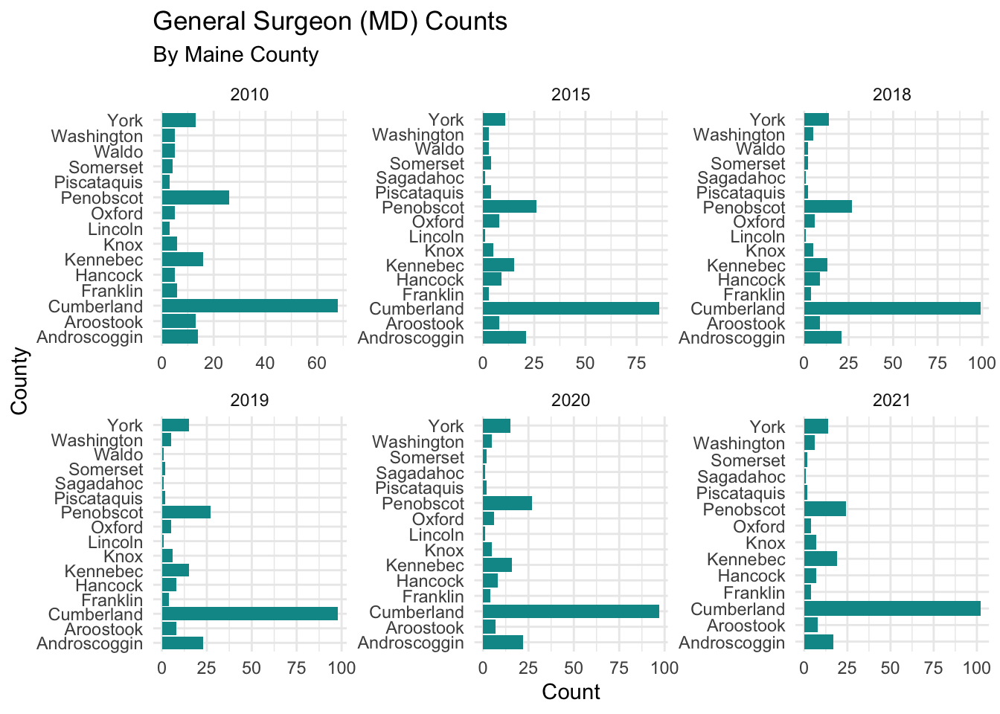
all_physicians %>%
filter(census_year == "2020") %>%
ggplot(aes(x = physician_count_year, y = md_gen_surg_count/census_count)) +
geom_smooth(method = "lm", color = "#AADB41") +
geom_line(alpha = 0.8, color = "#006992") +
theme_minimal() +
scale_y_continuous(labels = label_comma()) +
labs(title = "General Surgeon (MD) Counts", subtitle = "By Maine County", x = "Year", y = "Count", caption = "General Surgeon count was divided by county population as of the 2020 Census") +
facet_wrap(~ county_name)`geom_smooth()` using formula = 'y ~ x'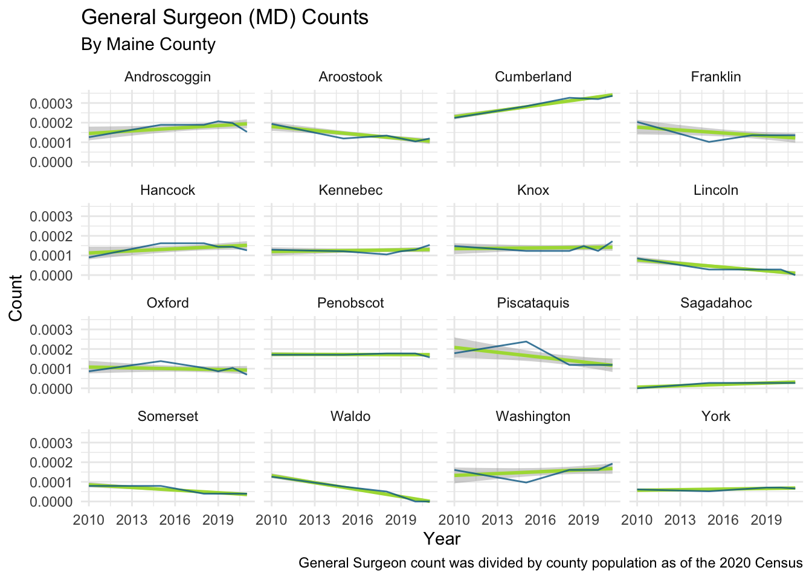
all_physicians %>%
filter(md_neuro_count != "0") %>%
ggplot(aes(x = county_name, y = md_neuro_count)) +
geom_col(fill = "#009796", position = "dodge") +
coord_flip() +
theme_minimal() +
labs(title = "Neurologist (MD) Counts", subtitle = "By Maine County", x = "County", y = "Count") +
facet_wrap(~ physician_count_year, scales = "free")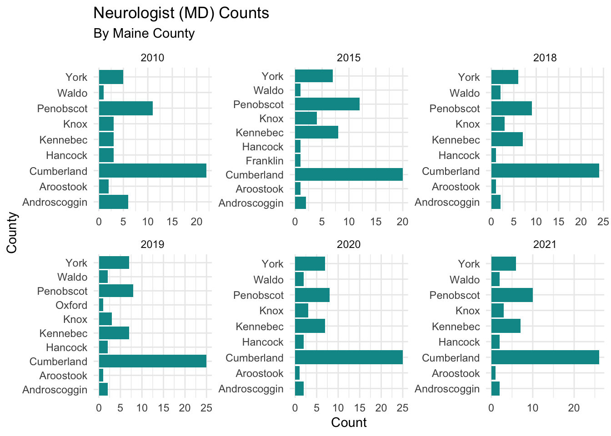
all_physicians %>%
filter(census_year == "2020") %>%
ggplot(aes(x = physician_count_year, y = md_neuro_count/census_count)) +
geom_smooth(method = "lm", color = "#AADB41") +
geom_line(alpha = 0.8, color = "#006992") +
theme_minimal() +
scale_y_continuous(labels = label_comma()) +
labs(title = "Neurologist (MD) Counts", subtitle = "By Maine County", x = "Year", y = "Count", caption = "Neurologist count was divided by county population as of the 2020 Census") +
facet_wrap(~ county_name)`geom_smooth()` using formula = 'y ~ x'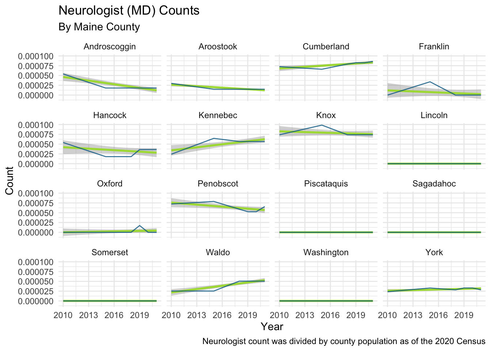
all_physicians %>%
filter(md_obgyn_count != "0") %>%
ggplot(aes(x = county_name, y = md_obgyn_count)) +
geom_col(fill = "#009796", position = "dodge") +
coord_flip() +
theme_minimal() +
labs(title = "OBGYN (MD) Counts", subtitle = "By Maine County", x = "County", y = "Count") +
facet_wrap(~ physician_count_year, scales = "free")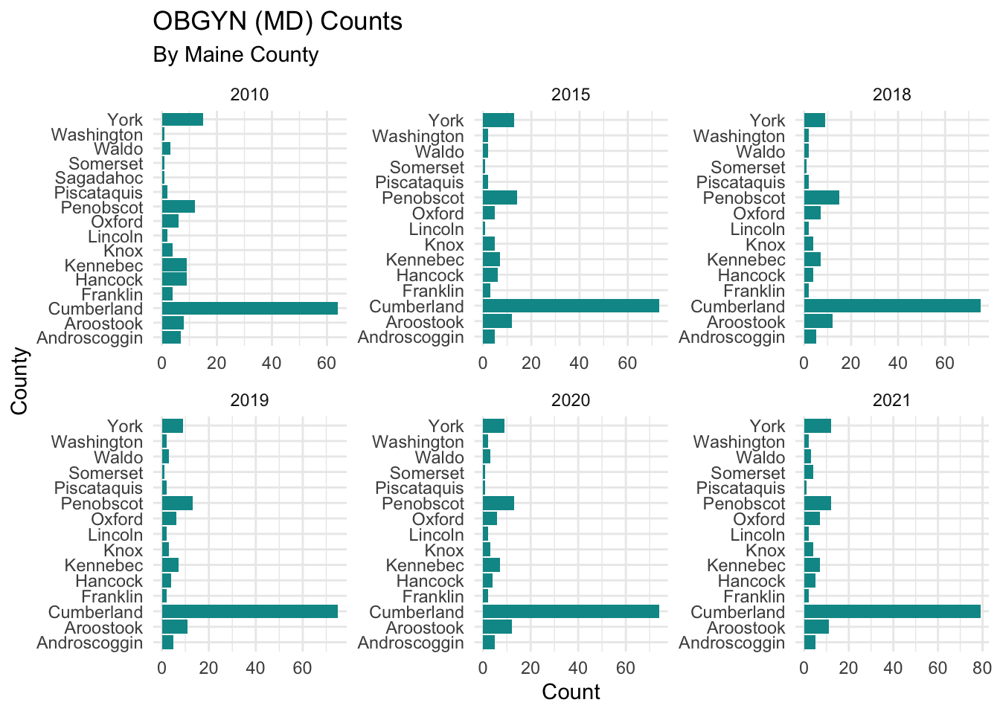
all_physicians %>%
filter(census_year == "2020") %>%
ggplot(aes(x = physician_count_year, y = md_obgyn_count/census_count)) +
geom_smooth(method = "lm", color = "#AADB41") +
geom_line(alpha = 0.8, color = "#006992") +
theme_minimal() +
scale_y_continuous(labels = label_comma()) +
labs(title = "OBGYN (MD) Counts", subtitle = "By Maine County", x = "Year", y = "Count", caption = "OBGYN count was divided by county population as of the 2020 Census") +
facet_wrap(~ county_name)`geom_smooth()` using formula = 'y ~ x'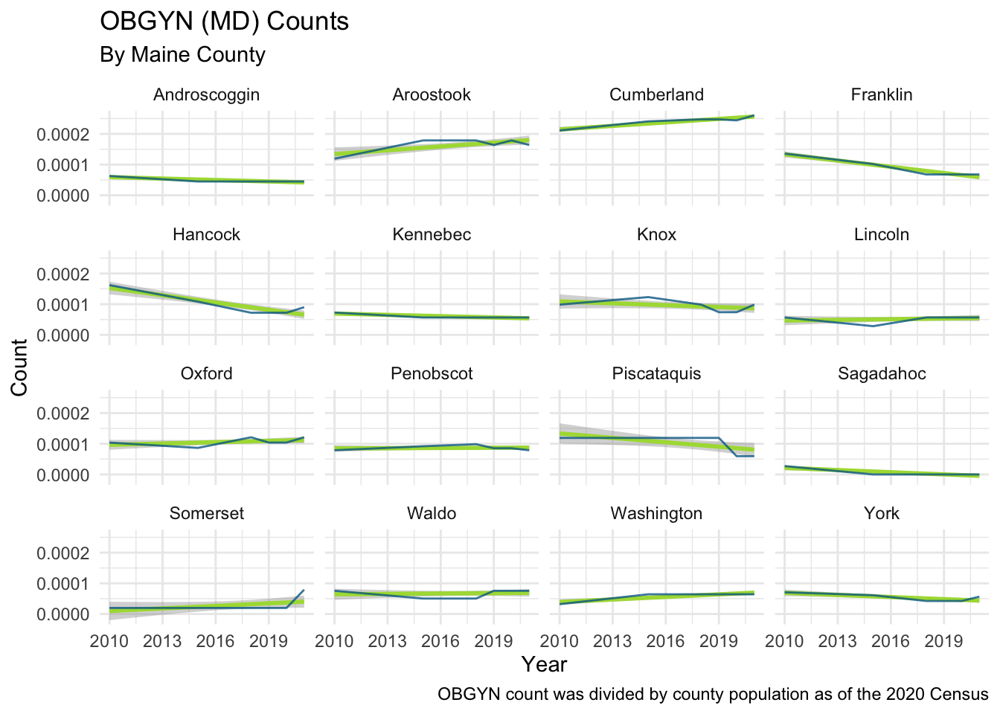
all_physicians %>%
filter(md_ophth_count != "0") %>%
ggplot(aes(x = county_name, y = md_ophth_count)) +
geom_col(fill = "#009796", position = "dodge") +
coord_flip() +
theme_minimal() +
labs(title = "Ophthalmologist (MD) Counts", subtitle = "By Maine County", x = "County", y = "Count") +
facet_wrap(~ physician_count_year, scales = "free")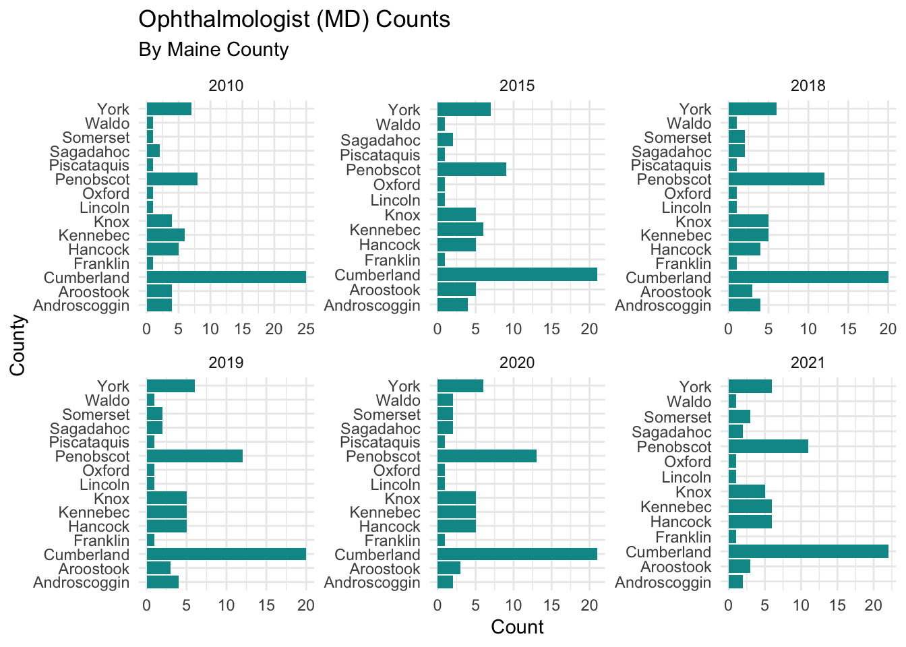
all_physicians %>%
filter(census_year == "2020") %>%
ggplot(aes(x = physician_count_year, y = md_ophth_count/census_count)) +
geom_smooth(method = "lm", color = "#AADB41") +
geom_line(alpha = 0.8, color = "#006992") +
theme_minimal() +
scale_y_continuous(labels = label_comma()) +
labs(title = "Ophthalmologist (MD) Counts", subtitle = "By Maine County", x = "Year", y = "Count", caption = "Ophthalmologist count was divided by county population as of the 2020 Census") +
facet_wrap(~ county_name)`geom_smooth()` using formula = 'y ~ x'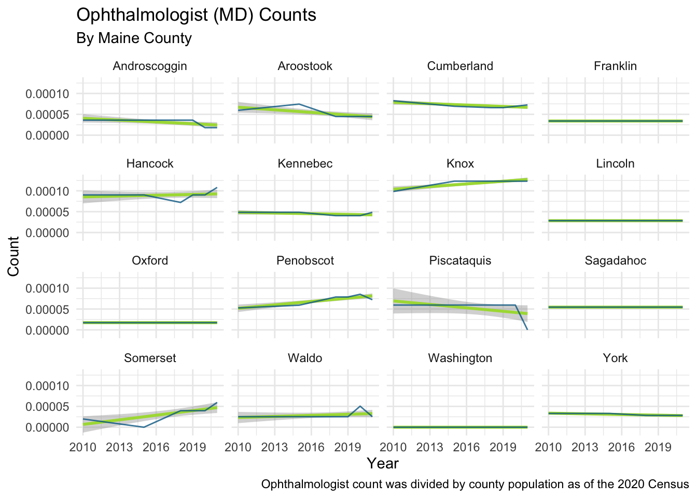
all_physicians %>%
filter(md_psych_count != "0") %>%
ggplot(aes(x = county_name, y = md_psych_count)) +
geom_col(fill = "#009796", position = "dodge") +
coord_flip() +
theme_minimal() +
labs(title = "Psychiatrist (MD) Counts", subtitle = "By Maine County", x = "County", y = "Count") +
facet_wrap(~ physician_count_year, scales = "free")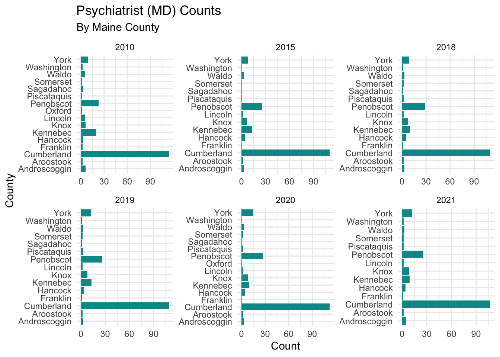
all_physicians %>%
filter(census_year == "2020") %>%
ggplot(aes(x = physician_count_year, y = md_psych_count/census_count)) +
geom_smooth(method = "lm", color = "#AADB41") +
geom_line(alpha = 0.8, color = "#006992") +
theme_minimal() +
scale_y_continuous(labels = label_comma()) +
labs(title = "Psychiatrist (MD) Counts", subtitle = "By Maine County", x = "Year", y = "Count", caption = "Psychiatrist count was divided by county population as of the 2020 Census") +
facet_wrap(~ county_name)`geom_smooth()` using formula = 'y ~ x'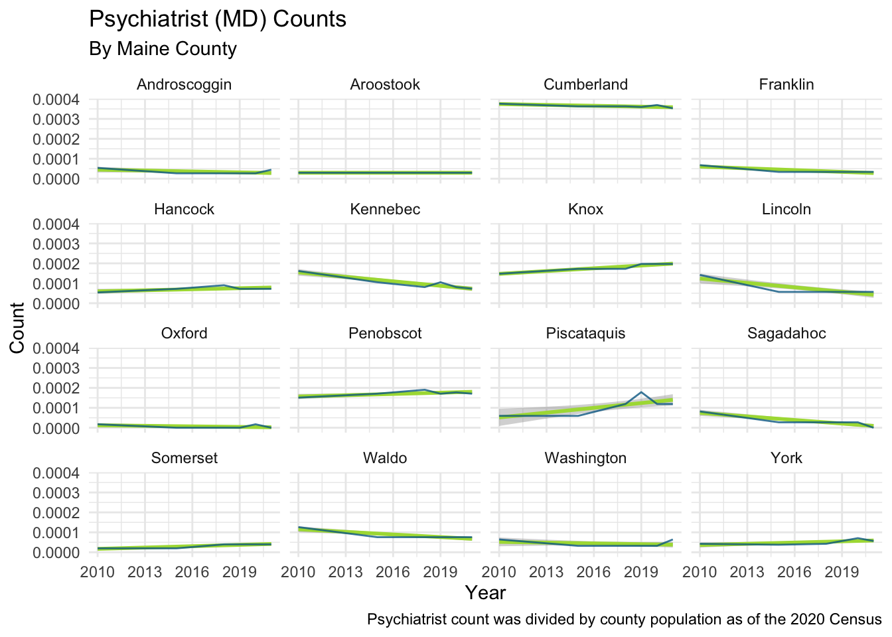
all_physicians %>%
filter(md_spec_count != "0") %>%
ggplot(aes(x = county_name, y = md_spec_count)) +
geom_col(fill = "#009796", position = "dodge") +
coord_flip() +
theme_minimal() +
labs(title = "All Specialists (MD) Count", subtitle = "By Maine County", x = "County", y = "Count") +
facet_wrap(~ physician_count_year, scales = "free")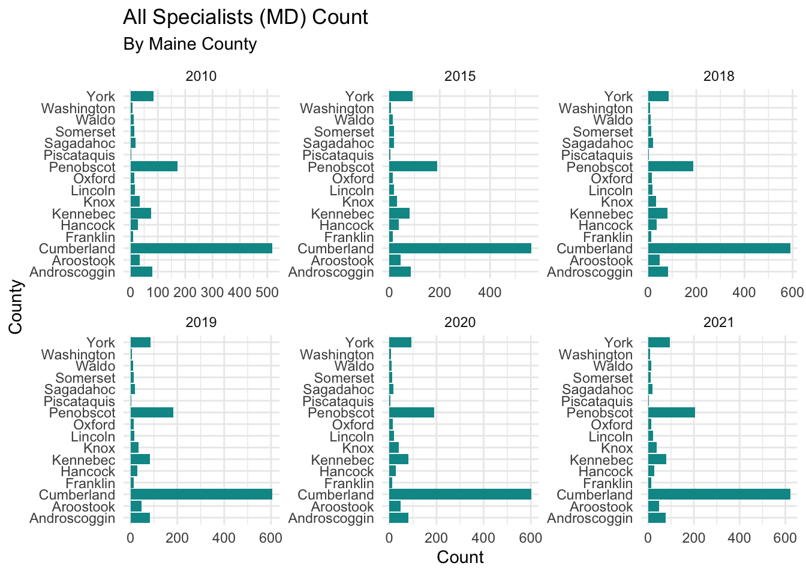
all_physicians %>%
filter(census_year == "2020") %>%
ggplot(aes(x = physician_count_year, y = md_spec_count/census_count)) +
geom_smooth(method = "lm", color = "#AADB41") +
geom_line(alpha = 0.8, color = "#006992") +
theme_minimal() +
scale_y_continuous(labels = label_comma()) +
labs(title = "All Specialists (MD) Count", subtitle = "By Maine County", x = "Year", y = "Count", caption = "All specialists count was divided by county population as of the 2020 Census") +
facet_wrap(~ county_name)`geom_smooth()` using formula = 'y ~ x'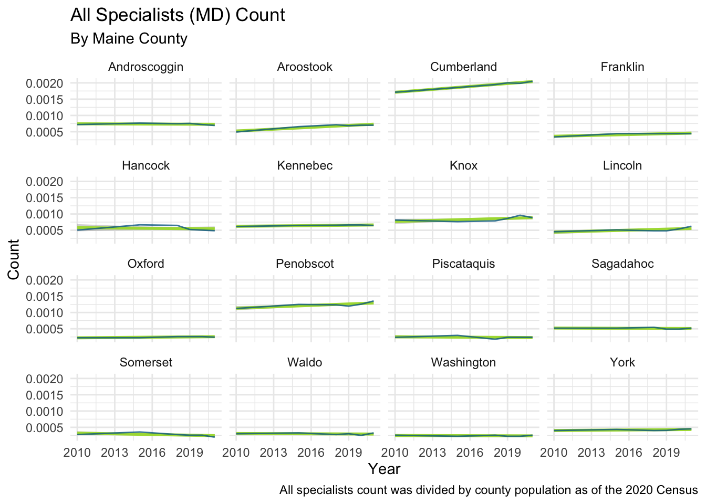
all_physicians %>%
filter(md_surg_spec_count != "0") %>%
ggplot(aes(x = county_name, y = md_surg_spec_count)) +
geom_col(fill = "#009796", position = "dodge") +
coord_flip() +
theme_minimal() +
labs(title = "All Surgical Specialists (MD) Count", subtitle = "By Maine County", x = "County", y = "Count") +
facet_wrap(~ physician_count_year, scales = "free")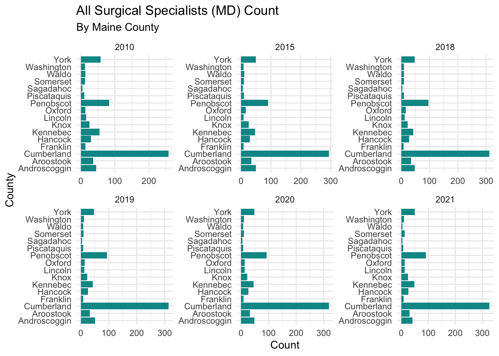
all_physicians %>%
filter(census_year == "2020") %>%
ggplot(aes(x = physician_count_year, y = md_gen_surg_count/census_count)) +
geom_smooth(method = "lm", color = "#AADB41") +
geom_line(alpha = 0.8, color = "#006992") +
theme_minimal() +
scale_y_continuous(labels = label_comma()) +
labs(title = "All Surgical Specialists (MD) Count", subtitle = "By Maine County", x = "Year", y = "Count", caption = "All surgical specialists count was divided by county population as of the 2020 Census") +
facet_wrap(~ county_name)`geom_smooth()` using formula = 'y ~ x'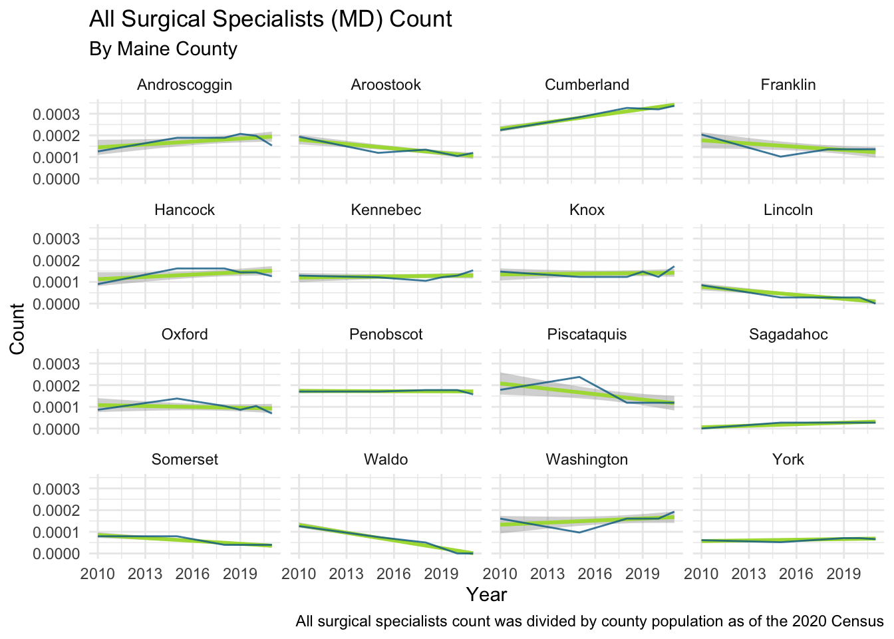
all_physicians %>%
filter(all_gp_md_count != "0") %>%
ggplot(aes(x = county_name, y = all_gp_md_count)) +
geom_col(fill = "#009796", position = "dodge") +
coord_flip() +
theme_minimal() +
labs(title = "General Practitioner (MD) Count", subtitle = "By Maine County", x = "County", y = "Count") +
facet_wrap(~ physician_count_year, scales = "free")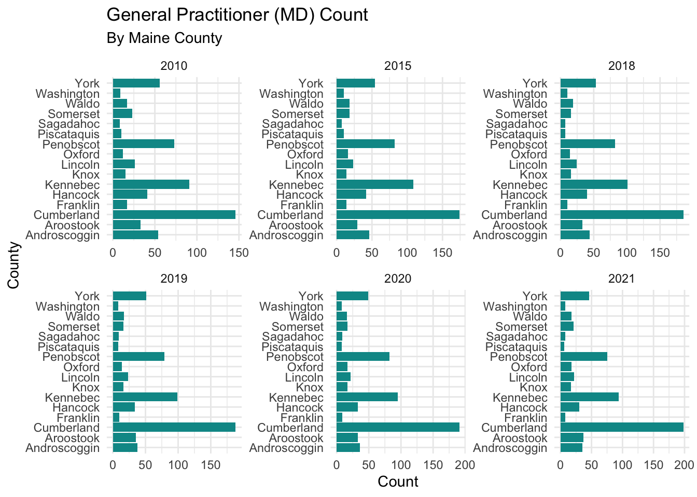
all_physicians %>%
filter(census_year == "2020") %>%
ggplot(aes(x = physician_count_year, y = all_gp_md_count/census_count)) +
geom_smooth(method = "lm", color = "#AADB41") +
geom_line(alpha = 0.8, color = "#006992") +
theme_minimal() +
scale_y_continuous(labels = label_comma()) +
labs(title = "General Practitioner (MD) Count", subtitle = "By Maine County", x = "Year", y = "Count", caption = "General Practitioner count was divided by county population as of the 2020 Census") +
facet_wrap(~ county_name)`geom_smooth()` using formula = 'y ~ x'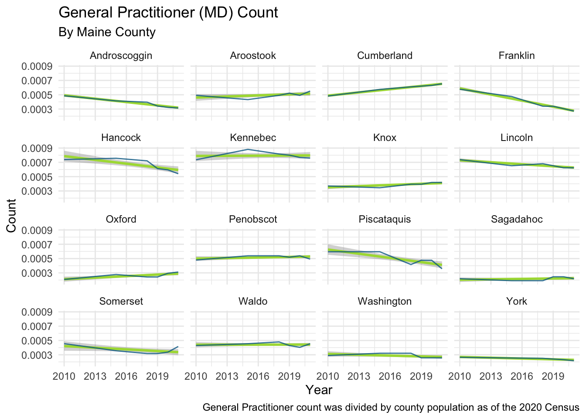
all_physicians %>%
filter(md_child_psych_count != "0") %>%
ggplot(aes(x = county_name, y = md_child_psych_count)) +
geom_col(fill = "#009796", position = "dodge") +
coord_flip() +
theme_minimal() +
labs(title = "Child Psychiatrist (MD) Count", subtitle = "By Maine County", x = "County", y = "Count") +
facet_wrap(~ physician_count_year, scales = "free")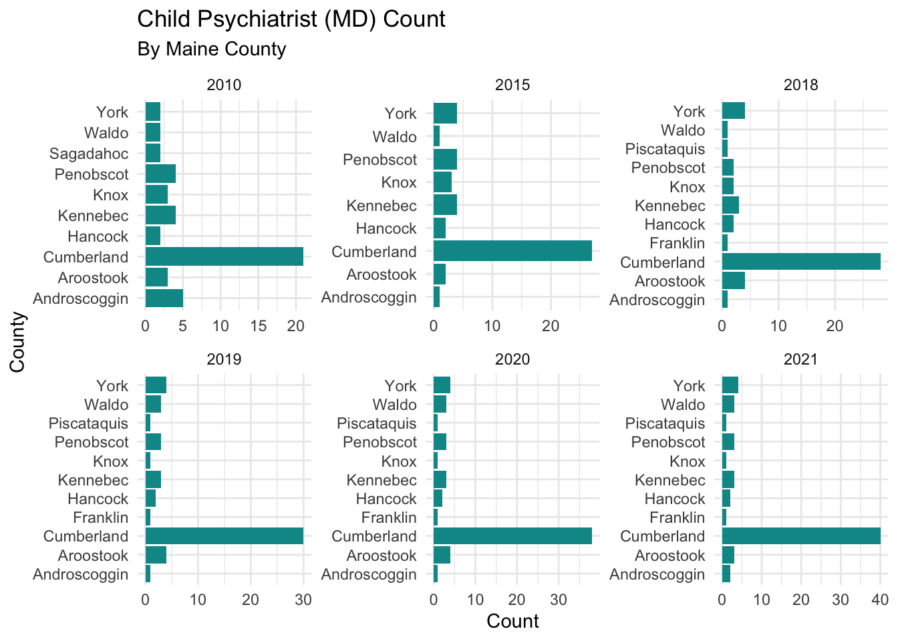
all_physicians %>%
filter(census_year == "2020") %>%
ggplot(aes(x = physician_count_year, y = md_child_psych_count/census_count)) +
geom_smooth(method = "lm", color = "#AADB41") +
geom_line(alpha = 0.8, color = "#006992") +
theme_minimal() +
scale_y_continuous(labels = label_comma()) +
labs(title = "Child Psychiatrist (MD) Count", subtitle = "By Maine County", x = "Year", y = "Count", caption = "Child psychiatrist count was divided by county population as of the 2020 Census") +
facet_wrap(~ county_name)`geom_smooth()` using formula = 'y ~ x'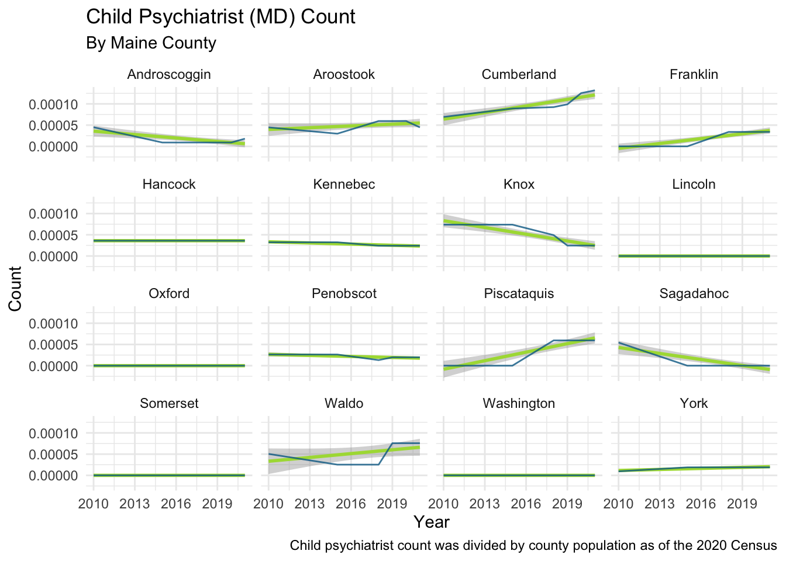
all_physicians %>%
filter(md_gen_ped_count != "0") %>%
ggplot(aes(x = county_name, y = md_gen_ped_count)) +
geom_col(fill = "#009796", position = "dodge") +
coord_flip() +
theme_minimal() +
labs(title = "General Pediatrician (MD) Count", subtitle = "By Maine County", x = "County", y = "Count") +
facet_wrap(~ physician_count_year, scales = "free")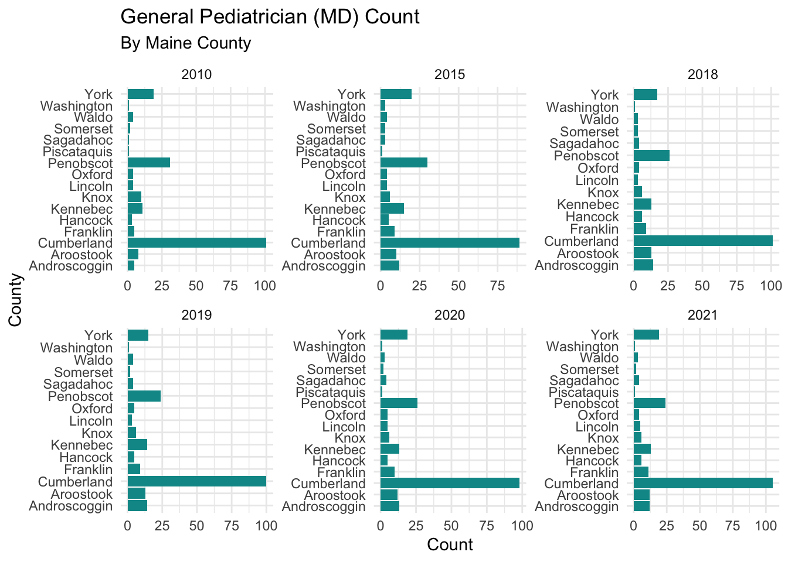
all_physicians %>%
filter(census_year == "2020") %>%
ggplot(aes(x = physician_count_year, y = md_gen_ped_count/census_count)) +
geom_smooth(method = "lm", color = "#AADB41") +
geom_line(alpha = 0.8, color = "#006992") +
theme_minimal() +
scale_y_continuous(labels = label_comma()) +
labs(title = "General Pediatrician (MD) Count", subtitle = "By Maine County", x = "Year", y = "Count", caption = "General pediatrician count was divided by county population as of the 2020 Census") +
facet_wrap(~ county_name)`geom_smooth()` using formula = 'y ~ x'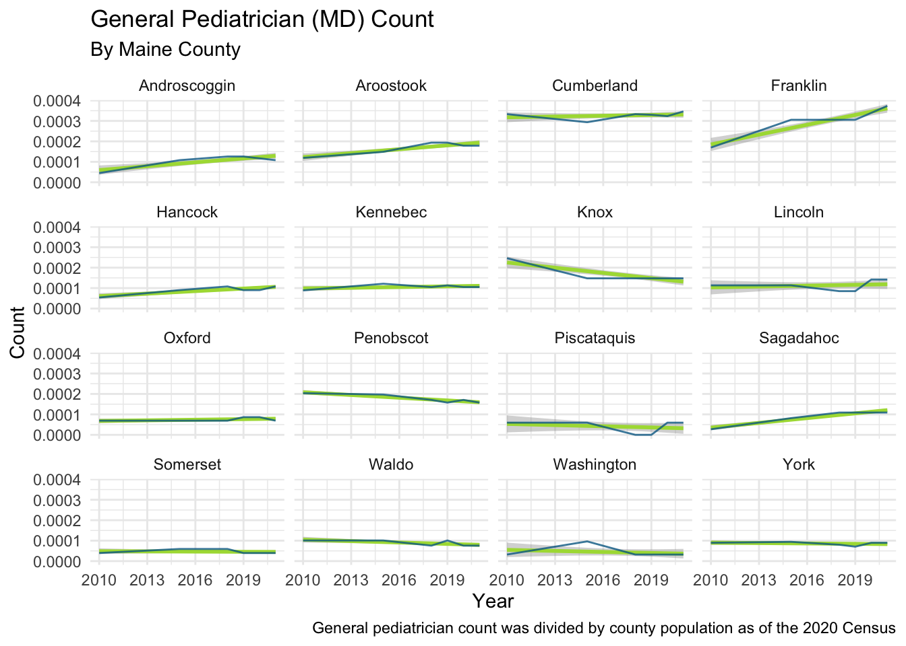
all_physicians %>%
filter(do_fammed_count != "0") %>%
ggplot(aes(x = county_name, y = do_fammed_count)) +
geom_col(fill = "#009796", position = "dodge") +
coord_flip() +
theme_minimal() +
labs(title = "Family Medicine Doctor (DO) Count", subtitle = "By Maine County", x = "County", y = "Count") +
facet_wrap(~ physician_count_year, scales = "free")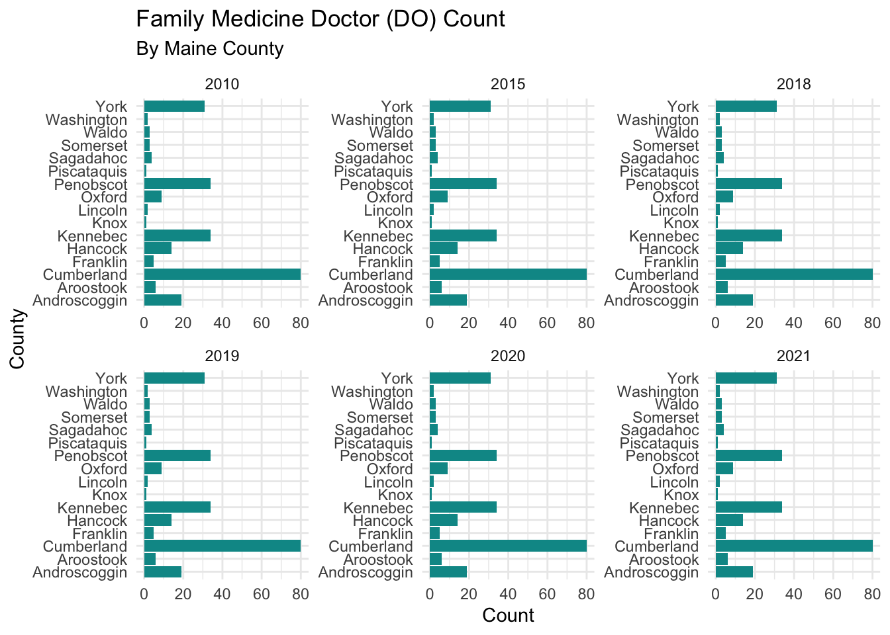
all_physicians %>%
filter(census_year == "2020") %>%
ggplot(aes(x = physician_count_year, y = do_fammed_count/census_count)) +
geom_smooth(method = "lm", color = "#AADB41") +
geom_line(alpha = 0.8, color = "#006992") +
theme_minimal() +
scale_y_continuous(labels = label_comma()) +
labs(title = "Family Medicine Doctor (DO) Count", subtitle = "By Maine County", x = "Year", y = "Count", caption = "Family medicine doctor count was divided by county population as of the 2020 Census") +
facet_wrap(~ county_name)`geom_smooth()` using formula = 'y ~ x'all_physicians %>%
filter(do_ped_count != "0") %>%
ggplot(aes(x = county_name, y = do_ped_count)) +
geom_col(fill = "#009796", position = "dodge") +
coord_flip() +
theme_minimal() +
labs(title = "Pediatrician (DO) Count", subtitle = "By Maine County", x = "County", y = "Count") +
facet_wrap(~ physician_count_year, scales = "free")all_physicians %>%
filter(census_year == "2020") %>%
ggplot(aes(x = physician_count_year, y = do_ped_count/census_count)) +
geom_smooth(method = "lm", color = "#AADB41") +
geom_line(alpha = 0.8, color = "#006992") +
theme_minimal() +
scale_y_continuous(labels = label_comma()) +
labs(title = "Pediatrician (DO) Count", subtitle = "By Maine County", x = "Year", y = "Count", caption = "Pediatrician count was divided by county population as of the 2020 Census") +
facet_wrap(~ county_name)`geom_smooth()` using formula = 'y ~ x'all_physicians %>%
filter(do_obgyn_count != "0") %>%
ggplot(aes(x = county_name, y = do_obgyn_count)) +
geom_col(fill = "#009796", position = "dodge") +
coord_flip() +
theme_minimal() +
labs(title = "OBGYN (DO) Count", subtitle = "By Maine County", x = "County", y = "Count") +
facet_wrap(~ physician_count_year, scales = "free")all_physicians %>%
filter(census_year == "2020") %>%
ggplot(aes(x = physician_count_year, y = do_obgyn_count/census_count)) +
geom_smooth(method = "lm", color = "#AADB41") +
geom_line(alpha = 0.8, color = "#006992") +
theme_minimal() +
scale_y_continuous(labels = label_comma()) +
labs(title = "OBGYN (DO) Count", subtitle = "By Maine County", x = "Year", y = "Count", caption = "OBGYN count was divided by county population as of the 2020 Census") +
facet_wrap(~ county_name)`geom_smooth()` using formula = 'y ~ x'all_physicians %>%
filter(do_gen_surg_count != "0") %>%
ggplot(aes(x = county_name, y = do_gen_surg_count)) +
geom_col(fill = "#009796", position = "dodge") +
coord_flip() +
theme_minimal() +
labs(title = "General Surgeon (DO) Count", subtitle = "By Maine County", x = "County", y = "Count") +
facet_wrap(~ physician_count_year, scales = "free")all_physicians %>%
filter(census_year == "2020") %>%
ggplot(aes(x = physician_count_year, y = do_gen_surg_count/census_count)) +
geom_smooth(method = "lm", color = "#AADB41") +
geom_line(alpha = 0.8, color = "#006992") +
theme_minimal() +
scale_y_continuous(labels = label_comma()) +
labs(title = "General Surgeon (DO) Count", subtitle = "By Maine County", x = "Year", y = "Count", caption = "General surgeon count was divided by county population as of the 2020 Census") +
facet_wrap(~ county_name)`geom_smooth()` using formula = 'y ~ x'all_physicians %>%
filter(do_emerg_med_count != "0") %>%
ggplot(aes(x = county_name, y = do_emerg_med_count)) +
geom_col(fill = "#009796", position = "dodge") +
coord_flip() +
theme_minimal() +
labs(title = "Emergency Medicine Doctor (DO) Count", subtitle = "By Maine County", x = "County", y = "Count") +
facet_wrap(~ physician_count_year, scales = "free")all_physicians %>%
filter(census_year == "2020") %>%
ggplot(aes(x = physician_count_year, y = do_emerg_med_count/census_count)) +
geom_smooth(method = "lm", color = "#AADB41") +
geom_line(alpha = 0.8, color = "#006992") +
theme_minimal() +
scale_y_continuous(labels = label_comma()) +
labs(title = "Emergency Medicine Doctor (DO) Count", subtitle = "By Maine County", x = "Year", y = "Count", caption = "Emergency medicine doctor count was divided by county population as of the 2020 Census") +
facet_wrap(~ county_name)`geom_smooth()` using formula = 'y ~ x'all_physicians %>%
filter(do_psych_count != "0") %>%
ggplot(aes(x = county_name, y = do_oth_spec_count)) +
geom_col(fill = "#009796", position = "dodge") +
coord_flip() +
theme_minimal() +
labs(title = "Psychiatrist (DO) Count", subtitle = "By Maine County", x = "County", y = "Count") +
facet_wrap(~ physician_count_year, scales = "free")all_physicians %>%
filter(census_year == "2020") %>%
ggplot(aes(x = physician_count_year, y = do_oth_spec_count/census_count)) +
geom_smooth(method = "lm", color = "#AADB41") +
geom_line(alpha = 0.8, color = "#006992") +
theme_minimal() +
scale_y_continuous(labels = label_comma()) +
labs(title = "Psychiatrist (DO) Count", subtitle = "By Maine County", x = "Year", y = "Count", caption = "Psychiatrist count was divided by county population as of the 2020 Census") +
facet_wrap(~ county_name)`geom_smooth()` using formula = 'y ~ x'
Analysis
all_physicians %>%
ggplot(aes(x = popn_est_count, y = all_gp_md_count)) +
geom_point(position = "jitter", alpha = 0.5) +
geom_smooth(method = "lm", se = FALSE)`geom_smooth()` using formula = 'y ~ x'(gp_md_change_pop <- linear_reg() %>%
set_engine("lm") %>%
fit(all_gp_md_count ~ physician_count_year + county_name + popn_est_count, data = all_physicians))parsnip model object
Call:
stats::lm(formula = all_gp_md_count ~ physician_count_year +
county_name + popn_est_count, data = data)
Coefficients:
(Intercept) physician_count_year county_nameAroostook
-2.531e+01 3.345e-02 -8.833e+00
county_nameCumberland county_nameFranklin county_nameHancock
1.382e+02 -3.083e+01 -5.500e+00
county_nameKennebec county_nameKnox county_nameLincoln
5.600e+01 -2.633e+01 -1.883e+01
county_nameOxford county_namePenobscot county_namePiscataquis
-2.700e+01 3.667e+01 -3.400e+01
county_nameSagadahoc county_nameSomerset county_nameWaldo
-3.417e+01 -2.367e+01 -2.467e+01
county_nameWashington county_nameYork popn_est_count
-3.333e+01 9.333e+00 -2.006e-16 tidy(gp_md_change_pop)# A tibble: 18 × 5
term estimate std.error statistic p.value
<chr> <dbl> <dbl> <dbl> <dbl>
1 (Intercept) -2.53e+ 1 160. -1.58e- 1 8.75e- 1
2 physician_count_year 3.35e- 2 0.0742 4.51e- 1 6.52e- 1
3 county_nameAroostook -8.83e+ 0 23.4 -3.78e- 1 7.06e- 1
4 county_nameCumberland 1.38e+ 2 101. 1.37e+ 0 1.72e- 1
5 county_nameFranklin -3.08e+ 1 42.6 -7.24e- 1 4.69e- 1
6 county_nameHancock -5.50e+ 0 28.9 -1.90e- 1 8.49e- 1
7 county_nameKennebec 5.60e+ 1 6.92 8.10e+ 0 8.56e-15
8 county_nameKnox -2.63e+ 1 36.8 -7.15e- 1 4.75e- 1
9 county_nameLincoln -1.88e+ 1 39.5 -4.77e- 1 6.34e- 1
10 county_nameOxford -2.70e+ 1 27.5 -9.80e- 1 3.27e- 1
11 county_namePenobscot 3.67e+ 1 21.4 1.71e+ 0 8.82e- 2
12 county_namePiscataquis -3.40e+ 1 49.2 -6.91e- 1 4.90e- 1
13 county_nameSagadahoc -3.42e+ 1 38.9 -8.79e- 1 3.80e- 1
14 county_nameSomerset -2.37e+ 1 31.8 -7.44e- 1 4.57e- 1
15 county_nameWaldo -2.47e+ 1 37.4 -6.60e- 1 5.10e- 1
16 county_nameWashington -3.33e+ 1 41.9 -7.95e- 1 4.27e- 1
17 county_nameYork 9.33e+ 0 53.8 1.73e- 1 8.62e- 1
18 popn_est_count -2.01e-16 0.000519 -3.86e-13 1.00e+ 0(gp_md_change_pop_aug <- augment(gp_md_change_pop$fit))# A tibble: 384 × 10
all_gp_md_count physician_count_year county_name popn_est_count .fitted
<int> <int> <chr> <int> <dbl>
1 44 2018 Androscoggin 113023 42.2
2 44 2018 Androscoggin 111034 42.2
3 44 2018 Androscoggin 113023 42.2
4 44 2018 Androscoggin 111034 42.2
5 46 2015 Androscoggin 113023 42.1
6 46 2015 Androscoggin 111034 42.1
7 46 2015 Androscoggin 113023 42.1
8 46 2015 Androscoggin 111034 42.1
9 54 2010 Androscoggin 113023 41.9
10 54 2010 Androscoggin 111034 41.9
# ℹ 374 more rows
# ℹ 5 more variables: .resid <dbl>, .hat <dbl>, .sigma <dbl>, .cooksd <dbl>,
# .std.resid <dbl>gp_md_change_pop_aug %>%
ggplot(aes(x = .fitted, y = .resid)) +
geom_point(alpha = 0.5) +
geom_smooth(method = "lm", se = FALSE)`geom_smooth()` using formula = 'y ~ x'glance(gp_md_change_pop)$r.squared %>%
tidy()Warning: 'tidy.numeric' is deprecated.
See help("Deprecated")# A tibble: 1 × 1
x
<dbl>
1 0.986glance(gp_md_change_pop)$adj.r.squared %>%
tidy()Warning: 'tidy.numeric' is deprecated.
See help("Deprecated")# A tibble: 1 × 1
x
<dbl>
1 0.985hpsa_pc_provider_counts %>%
ggplot(aes(x = pc_physician_count_year, y = pc_physician_count)) +
geom_point(position = "jitter", alpha = 0.5) +
geom_smooth(method = "lm", se = FALSE)`geom_smooth()` using formula = 'y ~ x'(pc_provider_change <- linear_reg() %>%
set_engine("lm") %>%
fit(pc_physician_count ~ pc_physician_count_year + county_name, data = hpsa_pc_provider_counts))parsnip model object
Call:
stats::lm(formula = pc_physician_count ~ pc_physician_count_year +
county_name, data = data)
Coefficients:
(Intercept) pc_physician_count_year county_nameAroostook
-876.883 0.479 -21.250
county_nameCumberland county_nameFranklin county_nameHancock
383.250 -54.667 -13.750
county_nameKennebec county_nameKnox county_nameLincoln
59.500 -49.583 -48.417
county_nameOxford county_namePenobscot county_namePiscataquis
-52.833 104.917 -74.917
county_nameSagadahoc county_nameSomerset county_nameWaldo
-65.167 -56.333 -60.000
county_nameWashington county_nameYork
-70.500 66.583 tidy(pc_provider_change)# A tibble: 17 × 5
term estimate std.error statistic p.value
<chr> <dbl> <dbl> <dbl> <dbl>
1 (Intercept) -877. 170. -5.15 3.37e- 7
2 pc_physician_count_year 0.479 0.0845 5.67 2.06e- 8
3 county_nameAroostook -21.3 1.65 -12.9 2.00e- 34
4 county_nameCumberland 383. 1.65 232. 0
5 county_nameFranklin -54.7 1.65 -33.1 5.10e-149
6 county_nameHancock -13.8 1.65 -8.33 3.77e- 16
7 county_nameKennebec 59.5 1.65 36.1 5.37e-166
8 county_nameKnox -49.6 1.65 -30.0 7.35e-131
9 county_nameLincoln -48.4 1.65 -29.3 1.16e-126
10 county_nameOxford -52.8 1.65 -32.0 1.69e-142
11 county_namePenobscot 105. 1.65 63.6 1.76e-304
12 county_namePiscataquis -74.9 1.65 -45.4 1.74e-217
13 county_nameSagadahoc -65.2 1.65 -39.5 1.97e-185
14 county_nameSomerset -56.3 1.65 -34.1 6.55e-155
15 county_nameWaldo -60.0 1.65 -36.4 9.86e-168
16 county_nameWashington -70.5 1.65 -42.7 3.42e-203
17 county_nameYork 66.6 1.65 40.3 3.35e-190(pc_provider_change_aug <- augment(pc_provider_change$fit))# A tibble: 768 × 9
pc_physician_count pc_physician_count_year county_name .fitted .resid .hat
<int> <int> <chr> <dbl> <dbl> <dbl>
1 94 2018 Androscoggin 89.8 4.22 0.0215
2 94 2018 Androscoggin 89.8 4.22 0.0215
3 94 2018 Androscoggin 89.8 4.22 0.0215
4 94 2018 Androscoggin 89.8 4.22 0.0215
5 88 2017 Androscoggin 89.3 -1.30 0.0211
6 88 2017 Androscoggin 89.3 -1.30 0.0211
7 88 2017 Androscoggin 89.3 -1.30 0.0211
8 88 2017 Androscoggin 89.3 -1.30 0.0211
9 91 2016 Androscoggin 88.8 2.18 0.0209
10 91 2016 Androscoggin 88.8 2.18 0.0209
# ℹ 758 more rows
# ℹ 3 more variables: .sigma <dbl>, .cooksd <dbl>, .std.resid <dbl>pc_provider_change_aug %>%
ggplot(aes(x = .fitted, y = .resid)) +
geom_point(alpha = 0.5) +
geom_smooth(method = "lm", se = FALSE)`geom_smooth()` using formula = 'y ~ x'glance(pc_provider_change)$r.squared %>%
tidy()Warning: 'tidy.numeric' is deprecated.
See help("Deprecated")# A tibble: 1 × 1
x
<dbl>
1 0.995glance(pc_provider_change)$adj.r.squared %>%
tidy()Warning: 'tidy.numeric' is deprecated.
See help("Deprecated")# A tibble: 1 × 1
x
<dbl>
1 0.995